ここからはディープラーニング用のライブラリであるKeras活用して画像認識プログラムの開発に取り組みます。まずは手書き文字データセットとして有名なMNISTデータを題材に画像認識プログラムの開発にチャレンジしてみましょう。
MNISTは手書き数字画像のデータセットです。以下のサイトで配布されています。
http://yann.lecun.com/exdb/mnist/
MNISTには60,000件の訓練データと10,000件のテストデータが含まれています。機械学習では訓練データを使って学習モデルをトレーニングし、テストデータを使って精度を計測します。
MNISTの画像ファイルは先頭16bytesをヘッダとして、以降は画像のピクセルごとのデータを並べたバイナリデータとして配布されています。JPGやPNGといったフォーマットで保存されていませんので取り扱いに注意してください。同様にラベルデータも先頭8bytesをヘッダとして、残りの部分にはラベルデータ（0-9）が格納されています。
KerasにはMNISTをダウンロードするユーティリティ関数が用意されています。これらのユーティリティを活用することで手軽に画像認識プログラムにチャレンジすることができます。
from keras.datasets import mnist
(x_train, y_train), (x_test, y_test) = mnist.load_data()
初回呼び出し時にインターネット上からMNISTデータをダウンロードします。ダウンロードしたデータは実行ユーザのホームフォルダ下の.keras/datasetsフォルダに保存されます。
Kerasを使って全結合型ニューラルネットワークを実装してみましょう。以下の構成でニューラルネットワークを構築します。
| 項目 | 値 |
|---|---|
| 入力層 | ノード数：784 |
| 隠れ層1 | 全結合層（ノード数：50）、活性化関数：sigmoid関数 |
| 隠れ層2 | 全結合層（ノード数：20）、活性化関数：sigmoid関数 |
| 出力層 | 全結合層（ノード数：10）、活性化関数：softmax関数 |
| 損失関数 | 多クラス-クロスエンロピー誤差（categorical_crossentropy） |
| オプティマイザー | 確率的勾配降下法（SGD） |
from keras.models import Sequential
from keras.layers import Dense, Activation
from keras.utils import to_categorical
from keras.datasets import mnist
(x_train, y_train), (x_test, y_test) = mnist.load_data()
# 28x28 => 784
x_train = x_train.reshape(60000, 784)
x_test = x_test.reshape(10000, 784)
# one-hot ex: 3 => [0,0,0,1,0,0,0,0,0,0]
y_train = to_categorical(y_train, 10)
y_test = to_categorical(y_test, 10)
# 0-255 => 0-1
x_train = x_train.astype("float32")
x_test = x_test.astype("float32")
x_train /= 255
x_test /= 255
model = Sequential()
model.add(Dense(50, input_dim=784))
model.add(Activation('sigmoid'))
model.add(Dense(20))
model.add(Activation('sigmoid'))
model.add(Dense(10))
model.add(Activation('softmax'))
model.compile(optimizer='sgd',
loss='categorical_crossentropy', metrics=['accuracy'])
history = model.fit(x_train, y_train, batch_size=32, epochs=10)
score = model.evaluate(x_test, y_test, verbose=0)
print("test acc : ", score[1])
プログラムの実行結果は次のようになります。
...省略
Epoch 9/10
60000/60000 4s - loss: 0.5100 - acc: 0.8672
Epoch 10/10
60000/60000 4s - loss: 0.4689 - acc: 0.8760
test accuracy : 0.8855
テストデータの正答率は88%と出力されているのがわかります。
続いてプログラムの詳細を見てみましょう。
まずはMNISTデータの読み込み部分を見てみましょう。
(x_train, y_train), (x_test, y_test) = mnist.load_data()
# 28x28 => 784
x_train = x_train.reshape(60000, 784)
x_test = x_test.reshape(10000, 784)
# one-hot ex: 3 => [0,0,0,1,0,0,0,0,0,0]
y_train = to_categorical(y_train, 10)
y_test = to_categorical(y_test, 10)
ここではKerasのmnist.load_dataメソッドを呼び出して、MNISTデータをロードしています。
次にnumpyのreshapeメソッドを使って配列を整形しています。ロードしてすぐのMNISTデータは28x28ピクセルの2次元配列となっているので1次元配列（要素数784）に変換しています。
その後、y_train、y_testといったラベルデータについてはカテゴリー表現（one-hot表現）に変換しています。たとえば 3 というデータの場合は [0,0,0,1,0,0,0,0,0,0] という具合に変換しています。
# 0-255 => 0-1
x_train = x_train.astype("float32")
x_test = x_test.astype("float32")
x_train /= 255
x_test /= 255
ここではデータの正規化（Normalization）を行っています。MNISTの画像データはグレースケールの画像です。1pixelのデータは0 - 255の範囲の値をとります。これらの値について、学習を効率良くすすめるために0 - 1の値に変換しています。
ここでの正規化とはデータを一定のルールに基づいて変換し、利用しやすくすることです。統計学において、データを平均0、標準偏差1に置き換える標準化（Standardization）という手法があります。これも正規化の一つと考えることができます。
プログラムの続きを見てみましょう。
model = Sequential()
model.add(Dense(50, input_dim=784))
model.add(Activation('sigmoid'))
model.add(Dense(20))
model.add(Activation('sigmoid'))
model.add(Dense(10))
model.add(Activation('softmax'))
model.compile(optimizer='sgd',
loss='categorical_crossentropy', metrics=['accuracy'])
ここでは以下の構成に従ってニューラルネットワークを構成しています。
| 項目 | 値 |
|---|---|
| 入力層 | ノード数：784 |
| 隠れ層1 | ノード数：50、活性化関数：sigmoid関数 |
| 隠れ層2 | ノード数：20、活性化関数：sigmoid関数 |
| 出力層 | ノード数：10、活性化関数：softmax関数 |
| 損失関数 | 多クラス-クロスエンロピー誤差（categorical_crossentropy） |
| オプティマイザー | 確率的勾配降下法（SGD） |
活性化関数や損失関数、オプティマイザーについては後ほど解説します。
最後に訓練データを投入して学習（トレーニング）し、テストデータを評価しています。
history = model.fit(x_train, y_train, batch_size=32, epochs=10)
score = model.evaluate(x_test, y_test, verbose=0)
print("test accuracy : ", score[1])
model.fitメソッドでは引数にbatch_size=32を指定しています。この場合訓練データから32件ずつサンプルを抽出して訓練していきます。同様にepochs引数に10を指定しています。エポックとは訓練データを何回学習するかを表す数値です。epochs引数に指定した回数、訓練を実施することになります。
batch_sizeの指定を省略した場合のデフォルトは32です。epochsのデフォルトは10です。
model.fitメソッドの呼び出し時の引数にvalidation_dataオプションを指定すると、エポックごとに検証データの結果を出力することができます。
history = model.fit(x_train, y_train, batch_size=32, epochs=10,
validation_data=(x_test, y_test))
上記のように指定すると次のような出力を得ることができます。
Train on 60000 samples, validate on 10000 samples
Epoch 1/10
60000/60000 5s - loss: 2.2236 - acc: 0.3141 - val_loss: 2.1051 - val_acc: 0.4797
Epoch 2/10
60000/60000 5s - loss: 1.9060 - acc: 0.5154 - val_loss: 1.6585 - val_acc: 0.5814
Epoch 3/10
60000/60000 5s - loss: 1.4351 - acc: 0.6443 - val_loss: 1.2173 - val_acc: 0.7052
Epoch 4/10
60000/60000 5s - loss: 1.0834 - acc: 0.7295 - val_loss: 0.9500 - val_acc: 0.7663
Epoch 5/10
60000/60000 5s - loss: 0.8711 - acc: 0.7860 - val_loss: 0.7793 - val_acc: 0.8160
Epoch 6/10
60000/60000 5s - loss: 0.7287 - acc: 0.8228 - val_loss: 0.6584 - val_acc: 0.8416
Epoch 7/10
60000/60000 5s - loss: 0.6273 - acc: 0.8466 - val_loss: 0.5722 - val_acc: 0.8617
Epoch 8/10
60000/60000 5s - loss: 0.5537 - acc: 0.8626 - val_loss: 0.5098 - val_acc: 0.8741
Epoch 9/10
60000/60000 5s - loss: 0.4993 - acc: 0.8750 - val_loss: 0.4626 - val_acc: 0.8843
Epoch 10/10
60000/60000 5s - loss: 0.4581 - acc: 0.8834 - val_loss: 0.4273 - val_acc: 0.8896
各エポックの出力に検証データの損失関数の値（val_loss）、検証データの正答率（val_acc）が含まれているのがわかります。
先に紹介したような層の深いニューラルネットワークによる機械学習はディープラーニングとも呼ばれます。ここではKeras上でニューラルネットワークを構築する方法について見ていきましょう。
Kerasには最新の研究・論文に基づいて様々なAPIが追加されています。ここでは一般的なものを中心に取り上げます。
全結合層（Fully Connected Layer）とは隣接する層間のすべてのノードが結合されている層のことです。
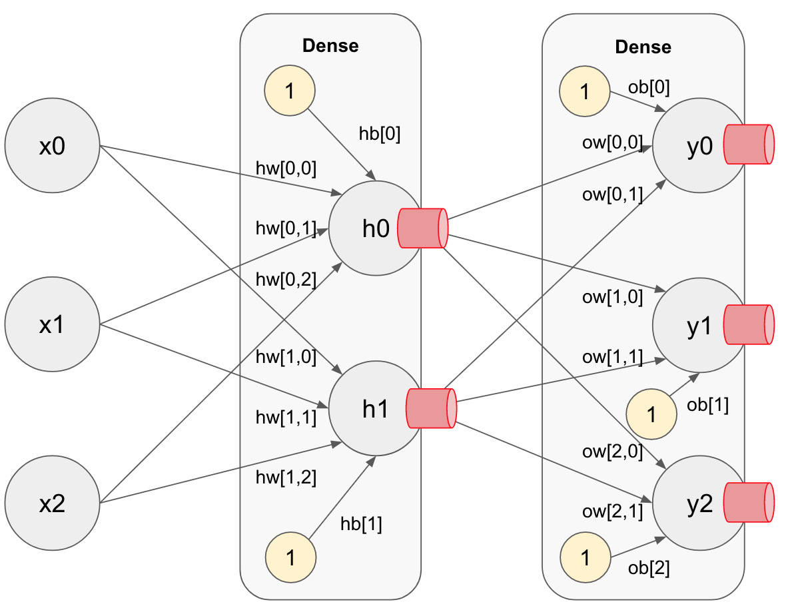
Kerasにおいて全結合層はDenseクラスで実装しています。
from keras.layers import Dense
model = Sequential()
model.add(Dense(50, input_dim=784))
上記の場合、全結合層のノードを50、入力層のノード数を784と定義しています。
先頭のDenseオブジェクトでは入力層のノードの数（input_dim）を定義します。
全結合層はノードの持つ重みの初期値（kernel_initializer）、及びバイアスの初期値（bias_initializer）を設定できます。
model.add(Dense(64,
kernel_initializer='random_uniform',
bias_initializer='zeros'))
上記の場合、ノードの重みの初期値に一様分布（random_uniform）を指定しています。random_uniformはデフォルトで-0.5〜0.5の範囲の乱数を返します。同様にバイアスの初期値には 0（zeros）を指定しています。
重みのデフォルトは Glorotの一様分布（glorot_uniform） に従います。これはlimitをsqrt(6 / (fan_in + fan_out)) としたとき[limit, -limit]を範囲とする一様分布です。fan_in は入力ノード数、fan_out は出力ノード数です。
活性化関数はノードの出力を制御する関数です。
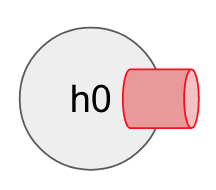
Kerasにおいて活性化関数はActivationクラスで実装されています。
from keras.layers import Activation
model = Sequential()
model.add(Activation('sigmoid'))
活性化関数は Dense(20, activation='sigmoid')) のようにDenseクラスのコンストラクタで指定することもできます。
活性化関数には次のようなものがあります。
sigomoid関数、tanh関数、relu関数は主に隠れ層で利用します。softmax関数、linear関数は主に出力層で利用します。
sigmoid関数、tanh関数、relu関数の実装例は次のようになります。
import numpy as np
import matplotlib.pyplot as plt
def sigmoid(x):
return 1 / (1 + np.exp(-x))
def tanh(x):
return np.tanh(x)
def relu(x):
return np.maximum(0, x)
x = np.arange(-3, 3, 0.1)
plt.plot(x, sigmoid(x))
plt.plot(x, tanh(x), linestyle='--')
plt.plot(x, relu(x), linestyle=':')
plt.ylim(-1.1, 1.1)
plt.show()
実行結果は次のようになります。
多層のニューラルネットワークでsigmoid関数やtanh関数を使うと、勾配消失問題を引き起こす可能性があります。そのためReLU関数を使うのが良いプラクティスとなっています。
softmax関数、linear関数の実装例は次のようになります。
import numpy as np
def softmax(x):
return np.exp(x) / np.sum(np.exp(x))
def linear(x):
return x
print(softmax(np.array([0.9, 0.2, 0.6])))
print(softmax(np.array([0.8, 0.1, 0.8])))
print(linear(np.array([0.9, 0.2, 0.6])))
print(linear(np.array([0.8, 0.1, 0.8])))
実行結果は次のようになります。
[ 0.44694665 0.22194714 0.33110622]
[ 0.4005471 0.1989058 0.4005471]
[ 0.9 0.2 0.6]
[ 0.8 0.1 0.8]
linear関数は引数をそのまま返却する関数です。恒等関数とも呼ばれます。
出力層の活性化関数は以下の方針に従い使い分けるようにします。
sigmoid関数は値を0から1の範囲で返す（確率）ので、二値分類として利用できます。また回帰分析であっても出力データが0から1の範囲になる場合はsigmoid関数、-1から1の範囲になる場合はtanh関数を使う事もできます。
損失関数はニューラルネットワークの出力と、教師データの相違を算出する関数です。ニューラルネットワークに訓練データを投入して、損失関数の結果を改善していくことで、ニューラルネットワークの精度を高めていきます。
損失関数はcompileメソッドの引数で指定します。
model.compile(optimizer='sgd', loss='categorical_crossentropy',
metrics=['accuracy'])
MNISTでは 0-9 の10クラスに分類するので、多クラス用のクロスエントピー誤差関数 "categorical_crossentropy" を指定しています。
もし分類結果を二値に分類（男性か女性か区別するなど）するのではれば 二値分類用のクロスエントピー誤差関数 "binary_crossentropy" を指定します。また分類問題ではなく回帰問題を解くのであれば 二乗和誤差関数 "mean_squared_error" を指定するのが一般的な方法です。
最適化処理は損失関数の結果をもとに、ニューラルネットワークのもつパラメータ（重みとバイアス）を最適化していく仕組みです。パラメータの勾配に学習率を掛け合わせて、パラメータを調整していく方法を勾配法と呼びます。

最適化処理（オプティマイザー）もcompileメソッドの引数で指定します。
model.compile(optimizer='sgd', loss='categorical_crossentropy',
metrics=['accuracy'])
ここでは確率的勾配降下法（SGD：Stochastic Gradient Descent）を指定しています。SGDは訓練データからランダムにデータを抽出して訓練を行います。また訓練データ1件ずつ勾配を求めるのではなく、複数の訓練データをまとめてミニバッチとして効率良く訓練することもできます。ミニバッチの単位指定はfitメソッド呼び出し時（訓練時）にbatch_size引数を指定します。
history = model.fit(x_train, y_train, batch_size=32)
batch_sizeのデフォルトは32となっています。
SGDの指定は次のようにSGDクラスからインスタンスを作成して実行することもできます。
from keras import optimizers
model = Sequential()
sgd = optimizers.SGD(lr=0.01, decay=1e-6, momentum=0.9)
model.compile(optimizer=sgd, loss='categorical_crossentropy',
metrics=['accuracy'])
上記のように実装すれば学習率（lr）の指定に加えて、学習率減衰（decay）やモーメンタム（momentum）を指定できます。
学習率とは勾配データから更新する量を決定するのに使うパラメータです。デフォルトは0.01となっています。
学習率減衰（Learning Rate Decay）とは学習の途中で学習率を減らすためのパラメータです。学習率は小さすぎると学習に時間がかかりますが、大きすぎると発散してしまい、正しく学習することができません。そこで学習率減衰（decay）を指定することで学習率を徐々に減らしていくことができます。デフォルトでは0.0が指定されます。
モーメンタムとは勾配を移動する際の運動量を表すパラメータです。モーメンタムには勾配を転がるボールに物理的な力が加わるようにパラメータ（α）を指定することができます。
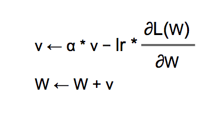
デフォルトでは0.0が指定されます。モーメンタムは無効になっています。
図のvは速度のように考えると良いでしょう。αに0.9のような値を設定することで摩擦のように作用します。
KerasではSGD以外にも様々な最適化アルゴリズムをサポートしています。
訓練データに対して良い結果を出したとしても、実際のデータで期待する結果が得られないというケースは望ましくありません。機械学習で作成されたモデルには汎化性能が求められます。機械学習において訓練データの学習に最適化してしまうことを過学習（オーバーフィッティング）と呼びます。
ここではMNISTデータを使って過学習を再現し、次の2つの対策方法を見ていきます。
次節では過学習の対策だけでなく学習を効率よく進める手法であるBatch Normalizationについても取り上げます。
過学習が発生する主な理由には以下の2つです。
ここではMNISTデータを500件に減らし、次のようなニューラルネットワークを実装してみます。
| 項目 | 値 |
|---|---|
| 入力層 | ノード数：784 |
| 隠れ層1 | 全結合層（ノード数：100）、活性化関数：relu関数 |
| 隠れ層2 | 全結合層（ノード数：100）、活性化関数：relu関数 |
| 隠れ層3 | 全結合層（ノード数：100）、活性化関数：relu関数 |
| 隠れ層4 | 全結合層（ノード数：100）、活性化関数：relu関数 |
| 出力層 | 全結合層（ノード数：10）、活性化関数：softmax関数 |
| 損失関数 | 多クラス-クロスエンロピー誤差（categorical_crossentropy） |
| オプティマイザー | 確率的勾配降下法（SGD） |
また学習時のエポック数は100、バッチサイズは32と指定しています。
from keras.models import Sequential
from keras.layers import Dense, Activation
from keras.utils import to_categorical
from keras.datasets import mnist
(x_train, y_train), (x_test, y_test) = mnist.load_data()
x_train = x_train.reshape(60000, 784)
x_test = x_test.reshape(10000, 784)
x_train = x_train.astype("float32")
x_test = x_test.astype("float32")
x_train /= 255
x_test /= 255
x_train = x_train[:500]
y_train = y_train[:500]
x_test = x_test[:500]
y_test = y_test[:500]
y_train = to_categorical(y_train, 10)
y_test = to_categorical(y_test, 10)
model = Sequential()
model.add(Dense(100, input_dim=784, activation='relu'))
model.add(Dense(100, activation='relu'))
model.add(Dense(100, activation='relu'))
model.add(Dense(100, activation='relu'))
model.add(Dense(10, activation='softmax'))
model.compile(optimizer='sgd', loss='categorical_crossentropy',
metrics=['accuracy'])
history1 = model.fit(x_train, y_train, batch_size=32, epochs=100,
validation_data=(x_test, y_test), verbose=1)
続いてグラフを表示させてみましょう。
import matplotlib.pyplot as plt
plt.subplot(1,2, 1)
plt.ylim(0, 1)
plt.plot(history1.history['acc'], label="acc", color="red", linestyle='dotted')
plt.plot(history1.history['val_acc'], label="val_acc", color="red")
plt.legend()
plt.subplot(1,2, 2)
plt.ylim(0, 1)
plt.plot(history1.history['loss'], label="loss", color="red", linestyle='dotted')
plt.plot(history1.history['val_loss'], label="val_loss", color="red")
plt.legend()
plt.show()
プログラムを実行すると次のようなグラフが表示されるでしょう。
60エポックの辺りから、訓練データの正答率が100%近くになっています。また検証データの損失値（val_loss）についても減少が停滞しているのがわかります。このようなケースは過学習に陥っていると言えます。
Weight Decay（重み減衰）は学習時に、大きな重みを持つことにペナルティを課すことで過学習を抑制します。
仕組みを具体的に見てみましょう。ニューラルネットワークでは学習時に、損失関数の値（loss）から勾配を算出します。その勾配に学習率を加味して重み（Weight）やバイアスを調整するのでした。Weight Decayでは損失関数の計算時に、重みの2乗ノルム（L2ノルム）を加算することで、重みの値が大きくならないように抑制します。
学習時の重みをW、学習率をlr、勾配を∂L(W)/∂Wとすると、次のように重みを更新します。
KerasでWeight Decayを実装するにはDenseクラスのコンストラクタでkernel_regularizerオプションを指定します。
from keras import regularizers
model = Sequential()
model.add(Dense(100, kernel_regularizer=regularizers.l2(0.01)))
regularizers.l2クラスはL2ノルムを表現するクラスです。コンストラクタにはL2ノルムに適用するハイパーパラメータを指定します。
それでは先ほどのMNISTプログラムにWeight Decayを実装してみましょう。
from keras.models import Sequential
from keras.layers import Dense, Activation
from keras.utils import to_categorical
from keras.datasets import mnist
from keras import regularizers
(x_train, y_train), (x_test, y_test) = mnist.load_data()
x_train = x_train.reshape(60000, 784)
x_test = x_test.reshape(10000, 784)
x_train = x_train.astype("float32")
x_test = x_test.astype("float32")
x_train /= 255
x_test /= 255
x_train = x_train[:500]
y_train = y_train[:500]
x_test = x_test[:500]
y_test = y_test[:500]
y_train = to_categorical(y_train, 10)
y_test = to_categorical(y_test, 10)
model = Sequential()
model.add(Dense(100, input_dim=784, activation='relu',
kernel_regularizer=regularizers.l2(0.03)))
model.add(Dense(100, activation='relu', kernel_regularizer=regularizers.l2(0.03)))
model.add(Dense(100, activation='relu', kernel_regularizer=regularizers.l2(0.03)))
model.add(Dense(100, activation='relu', kernel_regularizer=regularizers.l2(0.03)))
model.add(Dense(10, activation='softmax'))
model.compile(optimizer='sgd', loss='categorical_crossentropy',
metrics=['accuracy'])
history2 = model.fit(x_train, y_train, batch_size=32, epochs=100,
validation_data=(x_test, y_test), verbose=0)
fitメソッドの引数にverbose=0を指定しているので訓練時の途中経過は出力しないようにしています。
続いてグラフを表示させてみましょう。ここでは一つ前の過学習した結果と合わせて表示してみます。
import matplotlib.pyplot as plt
plt.ylim(0, 1)
plt.plot(history1.history['acc'], label="acc", color="red", linestyle='dotted')
plt.plot(history1.history['val_acc'], label="val_acc", color="red")
plt.plot(history2.history['acc'], label="wd_acc", color="blue", linestyle='dotted')
plt.plot(history2.history['val_acc'], label="wd_val_loss", color="blue")
plt.legend()
plt.show()
プログラムを実行すると次のようなグラフが表示されるでしょう。
Weight Decayによって訓練データへの過学習が抑制されているのがわかります。
Dropoutはニューラルネットワーク上のノードをランダムに選別して学習する方法です。学習時はDropout層で指定した割合のノードを無効化して学習します。無効化したノードにはアクティベーションが伝搬しないようになります。たとえばDropoutする割合に0.4を指定した場合、学習の都度ランダムに40%のノードを無効化して学習していきます。
また推論時には全てのノードを使って計算を行いますが、各ノードの出力に対して、学習時に無効化した割合を乗算して出力します。たとえば学習時にDropoutで無効にした割合が0.4だった場合、推論時の出力に0.6（1.0 - 0.4）を乗算します。
KerasにはDropoutクラスが用意されています。
from keras.layers import Dropout
model = Sequential()
model.add(Dropout(0.3))
Dropoutクラスのコンストラクタで無効化する割合を指定します。
それではKerasでDropoutを実装してみましょう。
from keras.models import Sequential
from keras.layers import Dense, Activation, Dropout
from keras.utils import to_categorical
from keras.datasets import mnist
(x_train, y_train), (x_test, y_test) = mnist.load_data()
x_train = x_train.reshape(60000, 784)
x_test = x_test.reshape(10000, 784)
x_train = x_train.astype("float32")
x_test = x_test.astype("float32")
x_train /= 255
x_test /= 255
x_train = x_train[:500]
y_train = y_train[:500]
x_test = x_test[:500]
y_test = y_test[:500]
y_train = to_categorical(y_train, 10)
y_test = to_categorical(y_test, 10)
model = Sequential()
model.add(Dense(100, input_dim=784, activation='relu'))
model.add(Dropout(0.3))
model.add(Dense(100, activation='relu'))
model.add(Dropout(0.3))
model.add(Dense(100, activation='relu'))
model.add(Dropout(0.3))
model.add(Dense(100, activation='relu'))
model.add(Dropout(0.3))
model.add(Dense(10, activation='softmax'))
model.compile(optimizer='sgd', loss='categorical_crossentropy',
metrics=['accuracy'])
history3 = model.fit(x_train, y_train, batch_size=32, epochs=100,
validation_data=(x_test, y_test), verbose=0)
fitメソッドの引数にverbose=0を指定しているので訓練時の途中経過は出力しないようにしています。
続いてグラフを表示させてみましょう。ここでは過学習した結果と合わせて表示してみます。
import matplotlib.pyplot as plt
plt.ylim(0, 1)
plt.plot(history1.history['acc'], label="acc", color="red", linestyle='dotted')
plt.plot(history1.history['val_acc'], label="val_acc", color="red")
plt.plot(history3.history['acc'], label="do_acc", color="green", linestyle='dotted')
plt.plot(history3.history['val_acc'], label="do_val_acc", color="green")
plt.legend()
plt.show()
プログラムを実行すると次のようなグラフが表示されるでしょう。
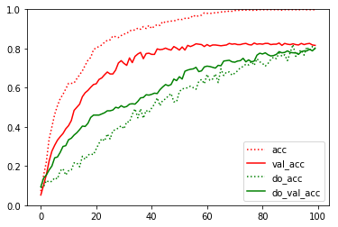
Dropoutによって訓練データへの過学習が抑制されているのがわかります。
これまでにニュラールネットワーク上の重みの更新を抑制するWeight Decayやノード自体を無効化してしまうDropoutという方法について学習しました。これらの方法を上手く使えば過学習を抑制しながら開発を進めることができそうです。次に学ぶBatch Normalizationは、ノードや重みを調整するのではなく、ニューラルネットワークを流れるデータそのものを調整する技術です。
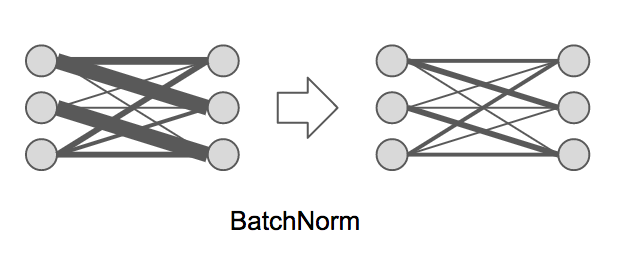
Batch Normalizationは、ノード間を流れるデータについて適度なバラつきを持つように調整します。具体的にはバッチ単位でノード間を流れるデータを平均0、分散1の標準正規分布に従うように調整します。Batch Normalizationによって次のような成果を期待できます。
KerasにはBatchNormalizationレイヤーが用意されています。
from keras.layers import BatchNormalization
model = Sequential()
model.add(BatchNormalization())
それではKerasでBatchNormalizationを実装してみましょう。ここではMNISTデータを処理するプログラムにBatchNormalizationを適用してみましょう。
from keras.models import Sequential
from keras.layers import Dense, Activation, BatchNormalization
from keras.utils import to_categorical
from keras.datasets import mnist
(x_train, y_train), (x_test, y_test) = mnist.load_data()
x_train = x_train.reshape(60000, 784)
x_test = x_test.reshape(10000, 784)
x_train = x_train.astype('float32')
x_test = x_test.astype('float32')
x_train /= 255
x_test /= 255
y_train = to_categorical(y_train, 10)
y_test = to_categorical(y_test, 10)
model = Sequential()
model.add(Dense(50, input_dim=784))
model.add(BatchNormalization())
model.add(Activation('relu'))
model.add(Dense(20))
model.add(BatchNormalization())
model.add(Activation('relu'))
model.add(Dense(10))
model.add(Activation('softmax'))
model.compile(optimizer='sgd', loss='categorical_crossentropy',
metrics=['accuracy'])
history = model.fit(x_train, y_train, batch_size=32, epochs=10,
validation_data=(x_test, y_test))
プログラムの実行結果は次のようになるでしょう。
Train on 60000 samples, validate on 10000 samples
Epoch 1/10
60000/60000 10s - loss: 0.6851 - acc: 0.8290 - val_loss: 0.2708 - val_acc: 0.9309
Epoch 2/10
60000/60000 10s - loss: 0.2891 - acc: 0.9202 - val_loss: 0.1935 - val_acc: 0.9457
Epoch 3/10
60000/60000 10s - loss: 0.2224 - acc: 0.9364 - val_loss: 0.1591 - val_acc: 0.9567
Epoch 4/10
60000/60000 10s - loss: 0.1906 - acc: 0.9450 - val_loss: 0.1400 - val_acc: 0.9596
Epoch 5/10
60000/60000 12s - loss: 0.1670 - acc: 0.9517 - val_loss: 0.1317 - val_acc: 0.9628
Epoch 6/10
60000/60000 10s - loss: 0.1517 - acc: 0.9560 - val_loss: 0.1260 - val_acc: 0.9636
Epoch 7/10
60000/60000 10s - loss: 0.1396 - acc: 0.9583 - val_loss: 0.1173 - val_acc: 0.9671
Epoch 8/10
60000/60000 10s - loss: 0.1305 - acc: 0.9614 - val_loss: 0.1087 - val_acc: 0.9703
Epoch 9/10
60000/60000 10s - loss: 0.1216 - acc: 0.9636 - val_loss: 0.1094 - val_acc: 0.9688
Epoch 10/10
60000/60000 10s - loss: 0.1135 - acc: 0.9656 - val_loss: 0.1028 - val_acc: 0.9691
検証データの正答率（val_acc）も97%近くまで上昇しています。上記のプログラムにおいてBatchNormalizationを消去してみる95%程度になるので効率よく学習できているのがわかります。
続いて畳み込みニューラルネットワーク（CNN : Convolutional Neural Network）を構築して、画像認識にチャレンジしてみましょう。
畳み込みニューラルネットワークとは、全結合型ニューラルネットワークに、畳み込み層（Convolutional Layer）やプーリング層（Pooling Layer）を追加したものです。CNNは音声認識や画像認識といった様々な目的に利用されています。特に画像認識の分野で高い精度を上げています。
CNNは次のようなネットワークになります。

本章では畳み込みニューラルネットワークの実装例を解説し、畳み込みニューラルネットワークを構成する次の3つの層の仕組みについて学習します。
Kerasを使って畳み込みニューラルネットワークを実装してみましょう。以下の構成に従ってニューラルネットワークを構築します。
| 項目 | 値 |
|---|---|
| 入力層 | ノード数：28 x 28 x 1 |
| 隠れ層1 | 畳み込み層（ノード数：50、カーネルサイズ：3 x 3）、活性化関数：relu関数 |
| 隠れ層2 | プーリング層（プールサイズ：2 x 2） |
| 隠れ層3 | 平滑化層 |
| 出力層 | 全結合層（ノード数：10）、活性化関数：softmax関数 |
| 損失関数 | 多クラス-クロスエンロピー誤差（categorical_crossentropy） |
| オプティマイザー | AdaGrad |
from keras.datasets import mnist
from keras.models import Sequential
from keras.layers import Dense, Activation, Conv2D, MaxPooling2D, Flatten
from keras.utils import to_categorical
(x_train, y_train), (x_test, y_test) = mnist.load_data()
x_train = x_train.reshape(60000, 28, 28, 1)
x_test = x_test.reshape(10000, 28, 28, 1)
x_train = x_train.astype("float32")
x_test = x_test.astype("float32")
x_train /= 255
x_test /= 255
y_train = to_categorical(y_train, 10)
y_test = to_categorical(y_test, 10)
model = Sequential()
model.add(Conv2D(32, kernel_size=(3, 3), input_shape=(28, 28, 1)))
model.add(Activation("relu"))
model.add(MaxPooling2D(pool_size=(2, 2)))
model.add(Flatten())
model.add(Dense(10))
model.add(Activation("softmax"))
model.compile(loss="categorical_crossentropy",
optimizer="adagrad",
metrics=["accuracy"])
model.fit(x_train, y_train, batch_size=64, epochs=5)
score = model.evaluate(x_test, y_test, verbose=0)
print("test acc : ", score[1])
プログラムを実行すると次のような結果が表示されるでしょう。
Epoch 1/5
60000/60000 7s 110us/step - loss: 0.2325 - acc: 0.9348
Epoch 2/5
60000/60000 6s 93us/step - loss: 0.1228 - acc: 0.9658
Epoch 3/5
60000/60000 6s 93us/step - loss: 0.0992 - acc: 0.9731
Epoch 4/5
60000/60000 6s 93us/step - loss: 0.0868 - acc: 0.9767
Epoch 5/5
60000/60000 6s 93us/step - loss: 0.0785 - acc: 0.9792
test acc : 0.9772
まずは全結合型ニューラルネットワークについて復習しておきましょう。
model = Sequential()
model.add(Dense(50, input_dim=784))
全結合型ニューラルネットワークでは、画像データを784個の要素の配列（ベクトル）に変換しているのがわかります。これはつまり、画像データの形状（縦28px、横28px）が無視されているのがわかります。
画像のようなデータには空間情報が含まれています。ここで言う空間情報とは縦、横（あるいは奥行き）のようなデータの関係性のことで、例えば、空や海といった風景写真であれば隣接するピクセルは類似した色が並んでいるでしょう。畳み込み層はこのような空間情報をうまく取り扱うことのできる仕組みです。
畳み込み層では入力データにフィルターを適用します。たとえば4x4の入力データに対して、3x3のフィルターを適用すると次のような演算が行われます。
フィルターはカーネルと呼ばれることもあります。
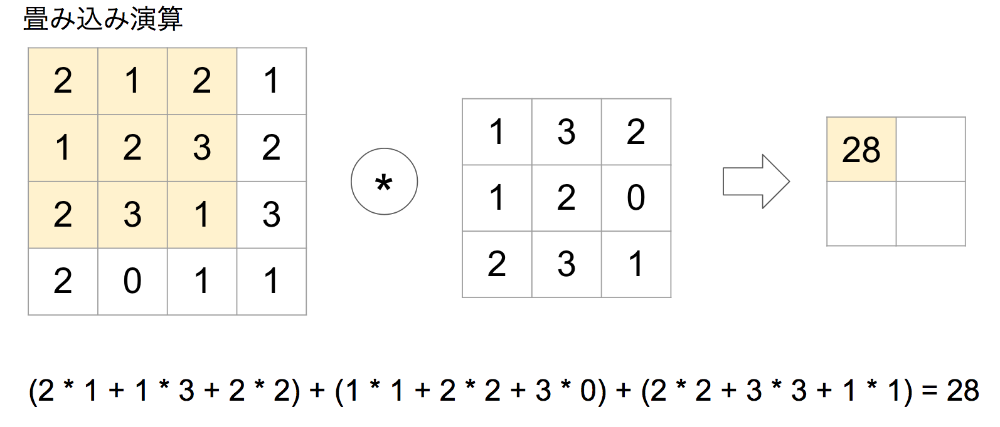

このような演算は積和演算と呼ばれることもあります。Pythonプログラムで実装すると次のようになります。
import numpy as np
img = np.array([[2,1,2,1],
[1,2,3,2],
[2,3,1,3],
[2,0,1,1]])
filter = np.array([[1,3,2], [1,2,0], [2,3,1]])
img_width = img.shape[0]
img_height = img.shape[1]
filter_width = filter.shape[0]
filter_height = filter.shape[1]
for i in range(img_height - filter_height + 1):
for j in range(img_width - filter_width + 1):
z = 0
z += img[i][j + 0] * filter[0][0]
z += img[i][j + 1] * filter[0][1]
z += img[i][j + 2] * filter[0][2]
z += img[i + 1][j + 0] * filter[1][0]
z += img[i + 1][j + 1] * filter[1][1]
z += img[i + 1][j + 2] * filter[1][2]
z += img[i + 2][j + 0] * filter[2][0]
z += img[i + 2][j + 1] * filter[2][1]
z += img[i + 2][j + 2] * filter[2][2]
print(z, end=' ')
print("")
実行結果は次のようになります。
28 29
26 24
Kerasにおいて畳み込み層を実装するにはConv2Dクラスを使います。
from keras.layers import Conv2D
model = Sequential()
model.add(Conv2D(32, kernel_size=(3, 3), input_shape=(28, 28, 1)))
ここでは入力データ（input_shape）で28x28の1チャネル画像を受け取り、3x3のフィルターを適用して畳み込み演算を行っています。もしRGBカラーのような3チャネルの画像を処理する場合はinput_shape=(28, 28, 3)のように指定します。
ニューラルネットワークの学習時にフィルターの持つ重みが更新されていきます。
畳み込み層にはパディングやストライドといったオプションも指定できます。
パディングとは入力データの周囲に余白をとる仕組みです。
パディングを指定することで出力データのサイズが変わります。上記のようにパディングサイズを1に指定すれば入力データと同じサイズの出力を得ることができます。
パディングを指定しないと出力データサイズが小さくなる点を理解しておきましょう。複数の畳み込み層を使う場合、畳み込み演算の度に出力データサイズが小さくなると、出力サイズが1になってしまい、以降の畳み込み演算を行えなくなる可能性があります。そのような場合はパディングによって出力サイズを保つことが大事になります。
KerasではConv2Dクラスのコンストラクタの引数paddingオプションでパディングの有無を指定します。
model.add(Conv2D(64, (3, 3), padding='same'))
paddingオプションには'valid'と'same'のいずれかを指定します。'same'を指定すると入力データと出力データサイズが同じになります。フィルターサイズが3x3の場合は、パディングに1を指定するのと同じになります。'valid'を指定するとパディングは適用しないのでデータサイズは小さくなります。paddingオプションのデフォルトは'valid'です。
ストライドはフィルターを適用する間隔を意味します。ストライドが1の場合の畳み込み演算はこれまでに見てきたとおりです。

ストライドが2の場合の畳み込み演算は次のようになります。
ストライドを大きくすると出力データサイズが小さくなります。
KerasではConv2Dクラスのコンストラクタの引数stridesオプションでストライドを指定します。
model.add(Conv2D(64, (3, 3), strides=2))
次のように縦横のストライドをタプルで指定することもできます。
model.add(Conv2D(64, (3, 3), strides=(2,2)))
プーリングは画像データのような空間データを小さくする仕組みです。ニューラルネットワーク上を流れるデータを圧縮する用途に使います。プーリングを導入することによって入力データの微小な変化に対してロバスト（頑健）になります。
プーリングにはMAXプーリング/AVERAGEプーリングといった手法があります。次の例はMAXプーリングの演算です。

上記の例では4x4の入力データに対して、プーリングサイズ2x2を指定しています。プーリングサイズが2x2の場合、元のデータを半分のサイズにして出力します。
プーリング時のストライドはプーリングサイズと同じにするのが一般的です。この場合、ストライドは2となります。
プーリング演算をPythonプログラムで実装すると次のようになります。
import numpy as np
img = np.array([[2,1,2,1],
[1,2,3,2],
[2,3,1,3],
[2,0,1,1]])
img_width = img.shape[0]
img_height = img.shape[1]
pool_width = 2
pool_height = 2
for i in range(0, img_width, pool_width):
for j in range(0, img_height, pool_height):
pool = [img[i][j + 0], img[i][j+ 1], img[i + 1][j + 0], img[i + 1][j + 1]]
print(np.max(pool), end=' ')
print("")
実行結果は次のようになります。
2 3
3 3
Kerasにおいてプーリング層を実装するにはMaxPooling2Dクラスを使います。
from keras.layers import MaxPooling2D
model = Sequential()
model.add(MaxPooling2D(pool_size=(2, 2)))
ここではプーリングサイズを2x2に指定しています。
pool_sizeオプションを省略した場合のデフォルトも(2, 2)となっています。
プーリングには重みのようなパラメータは使用しません。言い方を変えればプーリング層には学習するパラメータが存在しないということです。
平滑化は入力データをフラットにすることです。具体的には畳み込み層やプーリング層の出力を全結合層に変換するときなどに使います。
Kerasにおいて平滑化層を表現するにはFlattenクラスを使います。
from keras.layers import Flatten
model = Sequential()
model.add(Flatten())
次のプログラムは畳み込み層の出力を平滑化するものです。
from keras.models import Sequential
from keras.layers import Conv2D, Flatten
model = Sequential()
model.add(Conv2D(64, kernel_size=(5, 5), input_shape=(32, 32, 3), padding='same'))
print(model.output_shape)
model.add(Flatten())
print(model.output_shape)
上記のプログラムを実行すると次のような出力が表示されるでしょう。
(None, 32, 32, 64)
(None, 65536)
タプルの先頭のNoneは訓練時のサンプル件数を表すものです。
この場合Conv2Dレイヤーの出力は（32, 32, 64）となっていますが、Flattenレイヤーによって平滑化された出力は65536（=32x32x64）となっているのがわかります。
以降はMNISTデータから離れて、独自データセットで検証してみましょう。ここではリンゴの画像データセットとそれ以外（バナナ）の画像データセットを使って2値分類に取り組みます。
本講座で扱うデータセットはImageNetから取得してきたものです。ImageNetは画像認識コンテストILSVRC（ImageNet Large Scale Visual Recognition Challenge）を運営しています。
ここではインターネット上の共有画像データセットを活用して、機械学習に取り組む方法を取り上げます。次のプログラムは大規模画像データベースImage Netから画像をダウンロードするサンプルプログラムです。
import sys
import os
from urllib import request
from PIL import Image
def download(url, decode=False):
response = request.urlopen(url)
no_image = "https://s.yimg.com/pw/images/en-us/photo_unavailable.png"
if response.geturl() == no_image:
# Flickr :This photo is no longer available iamge.
raise Exception("This photo is no longer available iamge.")
body = response.read()
if decode == True:
body = body.decode()
return body
def write(path, img):
file = open(path, 'wb')
file.write(img)
file.close()
classes = {"apple":"n07739125", "banana":"n07753592"}
# classes = {"cherry":"n07757132"}
offset = 0
max = 10 # 2000
for dir, id in classes.items():
print(id)
os.makedirs(dir, exist_ok=True)
urls = download(
"http://www.image-net.org/api/text/imagenet.synset.geturls?wnid="+id,
decode=True).split()
print(len(urls))
i = 0
for url in urls:
if i < offset:
continue
if i > max:
break
try:
file = os.path.split(url)[1]
path = dir + "/" + file
write(path, download(url))
print("done:" + str(i) + ":" + file)
except:
print("Unexpected error:", sys.exc_info()[0])
print("error:" + str(i) + ":" + file)
i = i + 1
print("end")
上記のプログラムを実行すると apple と banana の画像をダウンロードできます。その他の画像をダウンロードしたい場合はプログラムの以下の部分を変更すると良いでしょう。
classes = {"apple":"n07739125", "banana":"n07753592"}
指定可能な値は以下のページで確認できます。 http://image-net.org/archive/words.txt
またダウンロードする画像数を変更するには以下のプログラムを修正します。
max = 10 # 2000
ImageNetは画像の著作権を所有していないため取り扱いには注意が必要です。ここでは機械学習の手法を学ぶ目的に限定して利用するものとします。
画像データをベクトル化する際、チャネル数を最後に表現するか、先頭に表現するか2つの考え方があります。たとえば先のケースはチャネル数を最後に表現しています（channels_last）。
(60, 90, 3)
一方、チャネル数を先頭で表現する（channels_first）場合は次のようになります。
(3, 60, 90)
KerasのAPIには data_format として channels_last / channels_firstを指定する箇所が多くあります。指定しない場合のデフォルトはchannels_lastとなっています。
本講座で扱う画像ファイルをベクトルに変換するユーティリティ（image_utils.py）です。
KerasのAPIを活用すれば不要となります。
from PIL import Image
import os
import numpy as np
from keras.preprocessing.image import load_img, img_to_array
from sklearn.model_selection import train_test_split
def load_images(dirA, dirB):
rowsA, labelsA = to_array(dirA, [1])
rowsB, labelsB = to_array(dirB, [0])
data = np.r_[rowsA, rowsB]
label = np.r_[labelsA, labelsB]
return train_test_split(data, label)
def to_array(dir, label):
rows = []
labels = []
for f in os.listdir(dir):
if f.startswith(".") == False :
row = img_to_array(load_img(dir + "/" + f))
rows.append(row)
labels.append(label)
return (np.array(rows), np.array(labels))
整形済みの画像をベクトルとしてロードするには次のように利用できます。
from image_utils import load_images
x_train, x_test, y_train, y_test = load_images("dirA", "dirB")
print(x_train.shape)
print(x_test.shape)
print(y_train.shape)
print(y_test.shape)
最後にload_images関数を利用したKerasのCNNプログラムを作成してみましょう。
ここではImageNetからダウンロードした画像を想定してサンプルプログラムを実装しています。

import keras
from keras.models import Sequential
from keras.layers import Dense, Dropout, Flatten
from keras.layers import Conv2D, MaxPooling2D
from image_utils import load_images
x_train, x_test, y_train, y_test = load_images("dirA", "dirB")
x_train = x_train.astype('float32')
x_test = x_test.astype('float32')
x_train /= 255
x_test /= 255
model = Sequential()
model.add(Conv2D(128, kernel_size=(3, 3),
input_shape=(60, 90, 3), activation='relu'))
model.add(Conv2D(64, kernel_size=(3, 3), activation='relu'))
model.add(MaxPooling2D(pool_size=(2, 2)))
model.add(Dropout(0.25))
model.add(Flatten())
model.add(Dense(128, activation='relu'))
model.add(Dropout(0.5))
model.add(Dense(1, activation='sigmoid'))
model.compile(loss=keras.losses.binary_crossentropy,
optimizer=keras.optimizers.Adadelta(),
metrics=['accuracy'])
history = model.fit(x_train, y_train,
batch_size=32,
epochs=20,
validation_data=(x_test, y_test),
verbose=1)
import matplotlib.pyplot as plt
plt.ylim(0.0, 1)
plt.plot(history.history['acc'], label="acc")
plt.plot(history.history['val_acc'], label="val_acc")
plt.legend()
plt.show()
実行結果は次のようになるでしょう。
...省略
Epoch 17/20
1173/1173 3s - loss: 0.0572 - acc: 0.9804 - val_loss: 0.8526 - val_acc: 0.7570
Epoch 18/20
1173/1173 3s - loss: 0.0524 - acc: 0.9804 - val_loss: 1.0598 - val_acc: 0.7724
Epoch 19/20
1173/1173 3s - loss: 0.0674 - acc: 0.9795 - val_loss: 0.8944 - val_acc: 0.7570
Epoch 20/20
1173/1173 3s - loss: 0.0420 - acc: 0.9864 - val_loss: 0.8620 - val_acc: 0.7545
訓練データの正答率（acc）は高いですが、テストデータの正答率（val_acc）は80%を下回ります。結果から過学習の傾向が見られます。
正答率をグラフ化してみましょう。
import matplotlib.pyplot as pltm
plt.ylim(0.5, 1)
plt.plot(history.history['acc'], label="acc")
plt.plot(history.history['val_acc'], label="val_acc")
plt.legend()
plt.show()

原因についてはいくつか考えられますが、訓練データが不足している可能性があります。
機械学習には既存のデータにノイズを加えることで、学習データを拡張（増加）するという手法があります。このような手法はData Augmentationと呼ばれます。Data Augmentationは十分な学習データを用意できないときに活用することができます。
たとえば画像認識においては次のようにして学習データを増やす方法があります。
ここではKerasのImageDataGeneratorクラスを活用してData Augmentationに取り組みます。
それではImageDataGeneratorクラスを使って、画像の水平移動を確認してみましょう。ここでは以下の画像（sample.jpg）をサンプルにImageDataGeneratorクラスの使い方を解説します。

import numpy as np
from keras.preprocessing.image import ImageDataGenerator
from keras.preprocessing.image import load_img, img_to_array, array_to_img
src_file = "sample.jpg"
dest_file = "shifted_sample.jpg"
sample = img_to_array(load_img(src_file))
samples = np.array([sample])
datagen = ImageDataGenerator(width_shift_range=0.3)
it = datagen.flow(samples)
array_to_img(it.next()[0]).save(dest_file)
上記のプログラムを実行すると次のような画像ファイルが生成されるでしょう。
ImageDataGeneratorクラスはコンストラクタの引数に加工方法を指定します。ここではwidth_shift_rangeによって画像の水平移動を指定しています。width_shift_rangeにはランダムに水平シフトする範囲（横幅に対する割合）を指定します。
datagen = ImageDataGenerator(width_shift_range=0.3)
垂直移動はheight_shift_rangeを使います。
ImageDataGeneratorインスタンスのflowメソッドを呼び出すとイテレータが返ります。
it = datagen.flow(samples)
イテレータに対してnext()メソッドを呼び出すと、指定したバッチサイズ（デフォルトは32）で画像を生成できます。
it = datagen.flow(samples, batch_size=16) のようにバッチサイズを指定することもできます。
array_to_img(it.next()[0]).save(dest_file)
ここでは1件のサンプルデータしか使っていないためit.next()の戻り値は1件の画像データになります。
ImageDataGeneratorクラスを使って画像の回転を確認してみましょう。
import numpy as np
from keras.preprocessing.image import ImageDataGenerator
from keras.preprocessing.image import load_img, img_to_array, array_to_img
src_file = "sample.jpg"
dest_file = "rotated_sample.jpg"
sample = img_to_array(load_img(src_file))
samples = np.array([sample])
datagen = ImageDataGenerator(rotation_range=30)
it = datagen.flow(samples)
array_to_img(it.next()[0]).save(dest_file)
上記のプログラムを実行すると次のような画像ファイルが生成されるでしょう。

ImageDataGeneratorクラスのコンストラクタにrotation_rangeを指定することで画像の回転を指定しています。rotation_rangeにはランダムに回転する回転範囲（0-180）を指定します。
datagen = ImageDataGenerator(rotation_range=30)
画像を縦横に反転する場合はvertical_flip=Trueやhorizontal_flip=Trueを指定します。
ImageDataGeneratorクラスを使って画像の拡大を確認してみましょう。
import numpy as np
from keras.preprocessing.image import ImageDataGenerator
from keras.preprocessing.image import load_img, img_to_array, array_to_img
src_file = "sample.jpg"
dest_file = "zoomed_sample.jpg"
sample = img_to_array(load_img(src_file))
samples = np.array([sample])
datagen = ImageDataGenerator(zoom_range=0.3)
it = datagen.flow(samples)
array_to_img(it.next()[0]).save(dest_file)
上記のプログラムを実行すると次のような画像ファイルが生成されるでしょう。
ImageDataGeneratorクラスのコンストラクタにzoom_rangeを指定することで画像の拡大を指定しています。zoom_rangeにはランダムにズームする範囲を指定します。
datagen = ImageDataGenerator(rotation_range=30)
ImageDataGeneratorクラスを使ってカラーの変更を確認してみましょう。
import numpy as np
from keras.preprocessing.image import ImageDataGenerator
from keras.preprocessing.image import load_img, img_to_array, array_to_img
src_file = "sample.jpg"
dest_file = "channel_shifted_sample.jpg"
sample = img_to_array(load_img(src_file))
samples = np.array([sample])
datagen = ImageDataGenerator(channel_shift_range=30)
it = datagen.flow(samples)
array_to_img(it.next()[0]).save(dest_file)
上記のプログラムを実行すると次のような画像ファイルが生成されるでしょう。

ImageDataGeneratorクラスのコンストラクタにchannel_shift_rangeを指定することでカラーチャネルの変更を指定しています。channel_shift_rangeにはランダムにチャンネルをシフトする範囲を指定します。
datagen = ImageDataGenerator(channel_shift_range=30)
ImageDataGeneratorクラスを使って複数の画像をオプションを指定して、画像ファイルを一括生成してみましょう。
import os
import numpy as np
from keras.preprocessing.image import ImageDataGenerator
from keras.preprocessing.image import load_img, img_to_array, array_to_img
src_file = "sample.jpg"
dest_dir = "dest"
os.makedirs(dest_dir, exist_ok=True)
dest_file = "dest/pic_{0:02d}.jpg"
samples = np.array([img_to_array(load_img(src_file))])
datagen = ImageDataGenerator(width_shift_range=0.3,
rotation_range=30,
zoom_range=0.3,
channel_shift_range=50,
horizontal_flip=True,
vertical_flip=True,
fill_mode="reflect")
for i in range(1, 100):
it = datagen.flow(samples)
array_to_img(it.next()[0]).save(dest_file.format(i))
上記のプログラムを実行するとdestフォルダ下にpic01.jpg〜pic99.jpgファイルが生成されます。
これまでに見てきたとおり画像データを水平（垂直）移動したり、回転や拡大（縮小）、カラー変更したりすることで既存の画像データにノイズを加える方法を学びました。ここからは機械学習時にデータ拡張を導入して、モデルを訓練する様子をみていきましょう。
ImageDataGeneratorクラスを使えば画像データを拡張できることを学びました。ここではImageDataGeneratorクラスを活用してKerasのCNNプログラムを作成してみましょう。
まずはImageDataGeneratorクラスのflowメソッドを活用するシンプルな方法を見てみます。その次にKerasのモデル（Model）に用意されているfit_generatorメソッドを使って、ImageDataGeneratorクラスでの画像生成を自動で組み込む方法を取り上げます。それからImageDataGeneratorクラスのflow_from_directoryを使って指定したフォルダ上の画像データを自動でロードする方法を紹介します。
ImageDataGeneratorクラスのflowメソッドを使えばバッチサイズを指定して、画像データを生成できます。
import keras
from keras.models import Sequential
from keras.layers import Dense, Dropout, Flatten
from keras.layers import Conv2D, MaxPooling2D
from keras.preprocessing.image import ImageDataGenerator
from image_utils import load_images
x_train, x_test, y_train, y_test = load_images("dirA", "dirB")
x_train = x_train.astype('float32')
x_test = x_test.astype('float32')
x_train /= 255
x_test /= 255
model = Sequential()
model.add(Conv2D(128, kernel_size=(3, 3),
input_shape=(60, 90, 3), activation='relu'))
model.add(Conv2D(64, kernel_size=(3, 3), activation='relu'))
model.add(MaxPooling2D(pool_size=(2, 2)))
model.add(Dropout(0.25))
model.add(Flatten())
model.add(Dense(128, activation='relu'))
model.add(Dropout(0.5))
model.add(Dense(1, activation='sigmoid'))
model.compile(loss=keras.losses.binary_crossentropy,
optimizer=keras.optimizers.Adadelta(),
metrics=['accuracy'])
datagen = ImageDataGenerator(width_shift_range=0.3,
rotation_range=30,
zoom_range=0.3,
horizontal_flip=True,
vertical_flip=True)
for e in range(20):
print('Epoch', e)
batches = 0
for x_batch, y_batch in datagen.flow(x_train, y_train, batch_size=32):
history = model.fit(x_batch, y_batch,
validation_data=(x_test, y_test), epochs=1)
batches += 1
if batches >= len(x_train) / 32:
break
この方法はImageDataGeneratorの挙動を確認するために取り上げています。実際には次に紹介するfit_generatorメソッドを活用すると良いでしょう。
プログラムを実行すると次のような結果を確認できるでしょう。
Epoch 0
Train on 32 samples, validate on 399 samples
Epoch 1/1
32/32 2s - loss: 0.6806 - acc: 0.5312 - val_loss: 1.5479 - val_acc: 0.5338
Train on 32 samples, validate on 399 samples
・・・省略
Epoch 1/1
32/32 0s - loss: 0.3814 - acc: 0.8438 - val_loss: 0.4264 - val_acc: 0.7895
Train on 32 samples, validate on 399 samples
Epoch 1/1
32/32 0s - loss: 0.3214 - acc: 0.9062 - val_loss: 0.3981 - val_acc: 0.8195
Train on 10 samples, validate on 399 samples
Epoch 1/1
10/10 0s - loss: 0.4946 - acc: 0.9000 - val_loss: 0.4230 - val_acc: 0.8471
繰り返しmodel.fitメソッドを呼び出しているため、学習結果の出力を繰り返すことになります。
このサンプルプログラムではflowメソッドによって生成された画像データを使って訓練を行います。20回のエポックの中で新しい画像データを生成しながら、モデルに対して繰り返しfitメソッドを呼ぶことで学習していきます。
for e in range(20):
print('Epoch', e)
batches = 0
for x_batch, y_batch in datagen.flow(x_train, y_train, batch_size=32):
history = model.fit(x_batch, y_batch,
validation_data=(x_test, y_test), epochs=1)
batches += 1
if batches >= len(x_train) / 32:
break
1回のエポックの中で画像生成時のバッチサイズに32を指定しています。
for x_batch, y_batch in datagen.flow(x_train, y_train, batch_size=32):
訓練データ（x_train, y_train）の中から32件のデータが選択されて、新たな画像が生成されます。生成された画像を使ってモデルの学習を進めています。
history = model.fit(x_batch, y_batch, validation_data=(x_test, y_test), epochs=1)
if文の条件についても補足しておきましょう。訓練データが1000件の場合、len(x_train) / 32 は 31.25となります。つまり画像データの生成（内側のfor文）を32回繰り返すると1回のエポックが終了します。
このようにして用意した画像データを拡張しながら、モデルの学習を進めることができます。
Kerasのモデル（Sequentialクラス）にはImageDataGeneratorを使った訓練をサポートするfit_generatorメソッドが提供されています。使い方を確認しておきましょう。
import keras
from keras.models import Sequential
from keras.layers import Dense, Dropout, Flatten
from keras.layers import Conv2D, MaxPooling2D
from keras.preprocessing.image import ImageDataGenerator
from image_utils import load_images
x_train, x_test, y_train, y_test = load_images("dirA", "dirB")
x_train = x_train.astype('float32')
x_test = x_test.astype('float32')
x_train /= 255
x_test /= 255
model = Sequential()
model.add(Conv2D(128, kernel_size=(3, 3),
input_shape=(60, 90, 3), activation='relu'))
model.add(Conv2D(64, kernel_size=(3, 3), activation='relu'))
model.add(MaxPooling2D(pool_size=(2, 2)))
model.add(Dropout(0.25))
model.add(Flatten())
model.add(Dense(128, activation='relu'))
model.add(Dropout(0.5))
model.add(Dense(1, activation='sigmoid'))
model.compile(loss=keras.losses.binary_crossentropy,
optimizer=keras.optimizers.Adadelta(),
metrics=['accuracy'])
datagen = ImageDataGenerator(width_shift_range=0.3,
rotation_range=30,
zoom_range=0.3,
horizontal_flip=True,
vertical_flip=True)
history = model.fit_generator(datagen.flow(x_train, y_train, batch_size=32),
steps_per_epoch=len(x_train) / 32, epochs=100,
validation_data=(x_test, y_test))
上記のプログラムは生成した画像データによる学習を繰り返すためにエポック数に100を指定しています。
プログラムを実行すると次のような結果を確認できるでしょう。
・・・省略
Epoch 97/100
38/37 3s - loss: 0.3330 - acc: 0.8551 - val_loss: 0.3934 - val_acc: 0.8446
Epoch 98/100
38/37 3s - loss: 0.3372 - acc: 0.8436 - val_loss: 0.3601 - val_acc: 0.8571
Epoch 99/100
38/37 3s - loss: 0.3218 - acc: 0.8427 - val_loss: 0.3932 - val_acc: 0.8371
Epoch 100/100
38/37 3s - loss: 0.3377 - acc: 0.8533 - val_loss: 0.3877 - val_acc: 0.8271
訓練データの正答率（acc）、テストデータの正答率ともに83%程度まで上昇しています。
正答率をグラフ化してみましょう。
import matplotlib.pyplot as plt
plt.ylim(0, 1)
plt.plot(history.history['acc'], label="acc")
plt.plot(history.history['val_acc'], label="val_acc")
plt.legend()
plt.show()
以前の学習と比べて、過学習の傾向も解消されているのがわかります。
プログラムの詳細を見てみましょう。
history = model.fit_generator(datagen.flow(x_train, y_train, batch_size=32),
steps_per_epoch=len(x_train) / 32, epochs=100,
validation_data=(x_test, y_test))
fit_generatorメソッドの第1引数にはflowメソッドの戻り値（イテレータ）を指定します。引数steps_per_epochには、1回のエポック内でジェネレータ（ImageDataGenerator）から生成されるサンプル (サンプルのバッチ) の総数を意味します。一般的には訓練データのユニークなサンプル数をバッチサイズで割った値（訓練データが1000件の場合、1000/32=32）を指定します。
これまでに画像データ拡張の実践方法について学びました。ImageDataGeneratorクラスにはフォルダ上の画像データをロードするユーティリティメソッド（flow_from_directory）が用意されています。
import keras
from keras.models import Sequential
from keras.layers import Dense, Dropout, Flatten
from keras.layers import Conv2D, MaxPooling2D
from keras.preprocessing.image import ImageDataGenerator
model = Sequential()
model.add(Conv2D(128, kernel_size=(3, 3),
input_shape=(60, 90, 3), activation='relu'))
model.add(Conv2D(64, kernel_size=(3, 3), activation='relu'))
model.add(MaxPooling2D(pool_size=(2, 2)))
model.add(Dropout(0.25))
model.add(Flatten())
model.add(Dense(128, activation='relu'))
model.add(Dropout(0.5))
model.add(Dense(1, activation='sigmoid'))
model.compile(loss=keras.losses.binary_crossentropy,
optimizer=keras.optimizers.Adadelta(),
metrics=['accuracy'])
train_datagen = ImageDataGenerator(rescale=1.0/255,
width_shift_range=0.3,
rotation_range=30,
zoom_range=0.3,
horizontal_flip=True,
vertical_flip=True)
train_generator = train_datagen.flow_from_directory('data60x90/train',
target_size=(60, 90),
batch_size=32,
class_mode='binary')
test_datagen = ImageDataGenerator(rescale=1.0/255)
test_generator = test_datagen.flow_from_directory('data60x90/test',
target_size=(60, 90),
batch_size=32,
class_mode='binary')
history = model.fit_generator(train_generator,
validation_data=test_generator,
steps_per_epoch=train_generator.samples / 32,
validation_steps=test_generator.samples / 32,
epochs=100)
プログラムの実行結果は1つ前の結果と同様です。
flow_from_directoryメソッドの使い方を確認しておきましょう。
train_generator = train_datagen.flow_from_directory('data60x90/train',
target_size=(60, 90),
batch_size=32,
class_mode='binary')
flow_from_directoryメソッドの第1引数には訓練データのパスを指定します。このときファイルシステム上において、次のような構成で訓練データが準備されている必要があります。
つまり第1引数で指定したフォルダには、分類したいクラスごとにサブフォルダを準備しておく必要があります。それからサブフォルダの中にはPNGかJPG形式の画像を含む必要があります。これはテストデータについても同様です。
フォルダ名やファイル名任意です。
その他の引数についても確認しておきましょう。target_size=(60, 90)を指定することで画像ファイルのロード時にファイルサイズをリサイズすることができます。指定しない場合のデフォルトは(256, 256)になります。
引数にcolor_mode="grayscale"を指定すると1チャネル（グレースケール）で読み込むこともできます。省略した場合のデフォルトはcolor_mode="rgb"となり、3チャネル（RGBチャネル）でロードされます。
次に引数batch_size=32はこれまでと同様にバッチサイズを指定しています。省略した場合のデフォルトも32です。
さいごに引数class_mode='binary'によって二値分類を指定しています。これによって自動的に1次元の二値ラベル（[0]か[1]）が生成されます。また多クラス分類の場合はclass_mode="categorical"を指定します。
また今回のサンプルプログラムではテストデータも同様にflow_from_directoryメソッドでロードしています。
test_datagen = ImageDataGenerator(rescale=1.0/255)
test_generator = test_datagen.flow_from_directory('data60x90/test',
target_size=(60, 90),
batch_size=32,
class_mode='binary')
テストデータにはデータ拡張は行いませんのでImageDataGeneratorの引数にrescale=1.0/255のみ指定しています。これは画像データの各ピクセルの値を0〜1の値に置き換えています。
モデルのfit_generatorメソッドには、訓練データとテストデータ用の2つのジェネレータを指定します。
history = model.fit_generator(train_generator,
validation_data=test_generator,
steps_per_epoch=train_generator.samples / 32,
validation_steps=test_generator.samples / 32,
epochs=100)
引数validation_stepsは、各エポックの終わりに検証用ジェネレータから使用するステップ数です。一般的にはテストデータのユニークなサンプル数をバッチサイズで割った値を指定します。
KerasにはVGG16やInceptionV3といった画像認識に利用可能なモデルが用意されています。これらのモデルはImageNetを活用した画像認識コンテストであるILSVRCで優秀な成績を収めたものがベースとなっています。
ここではCNNをベースにした画像認識モデルの発展の歴史を振り返ってみましょう。
CNNの考え方のルーツは1998年頃にYann LeCun氏によって発表されたLeNetと言われています。
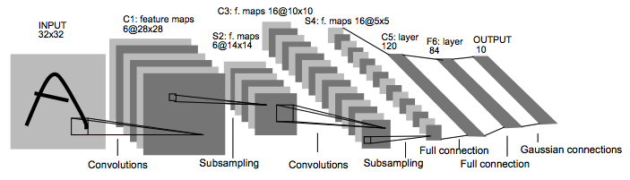
画像引用：http://yann.lecun.com/exdb/publis/pdf/lecun-98.pdf より
LeNetは畳み込みレイヤーとサブサンプリングレイヤー、全結合レイヤーで構成されています。当時はプーリングレイヤーではなく、サブサンプリングレイヤーと呼ばれていましたが、CNNの原型はこの頃から提案されていたのがわかります。1998年当時はマシンスペックやデータの準備に課題があり、LeNetは実用に至りませんでした。
CNNが注目されるきっかけになったのが2012年に登場したAlexNetです。AlexNetは2012年のImageNet上のデータを活用した画像認識コンテスト（ILSVRC）で前年度の結果（画像の認識率）を10%近く改善したことで大きな注目を集めるようになります。
AlexNetでは畳み込みレイヤー、プーリングレイヤー、全結合レイヤーで構成されています。LeNetと比較すると活性化関数にReLU関数に使用したり、Dropoutレイヤーを導入したりといった改善が提案されています。
AlexNet以降も様々な画像認識モデルが提案されています。
KerasはImageNetで学習した重みパラメータをもつ学習済みモデルを提供しています。
VGG19はVGG16のレイヤー数を19層と深くしたものです。またXceptionはInceptionV3をベースに考案されたものです。本書ではシンプルなCNNとして実装されているVGG16の利用例を中心に取り上げます。
VGG16は畳み込み層、プーリング層、全結合層で構成されているシンプルなCNNです。学習用のパラメータを持つ層が16層で構成されているためVGG16という名前になっています。
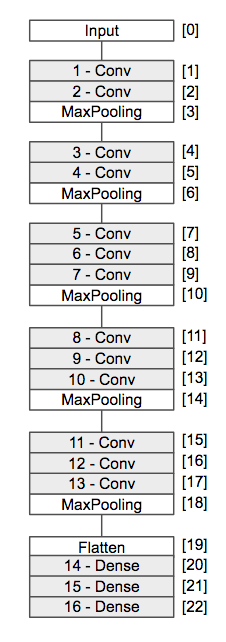
VGG16の論文はarxiv.orgの以下のページで確認できます。
[Very Deep Convolutional Networks for Large-Scale Image Recognition] https://arxiv.org/abs/1409.1556
arxiv.orgは数学、物理学、統計学など様々な分野の論文が保存・公開されているウェブサイトです。ディープラーニングに関連する多くの論文もarxiv.orgにて公開されています。
それでは実際にVGG16を使って画像認識に取り組んでみましょう。まずは次のようにVGG16の詳細を確認してみましょう。
from keras.applications.vgg16 import VGG16
model = VGG16(weights='imagenet')
print(model.summary())
初回実行時はインターネット上からVGG16のモデル（パラメータ）がダウンロードされます。ダウンロードしたモデルはホームフォルダ上の.keras/modelsフォルダに格納されます。
プログラムを実行すると次のようなモデルのサマリーが表示されるでしょう。
_________________________________________________________________
Layer (type) Output Shape Param #
=================================================================
input_1 (InputLayer) (None, 224, 224, 3) 0
_________________________________________________________________
block1_conv1 (Conv2D) (None, 224, 224, 64) 1792
_________________________________________________________________
block1_conv2 (Conv2D) (None, 224, 224, 64) 36928
_________________________________________________________________
block1_pool (MaxPooling2D) (None, 112, 112, 64) 0
_________________________________________________________________
block2_conv1 (Conv2D) (None, 112, 112, 128) 73856
_________________________________________________________________
block2_conv2 (Conv2D) (None, 112, 112, 128) 147584
_________________________________________________________________
block2_pool (MaxPooling2D) (None, 56, 56, 128) 0
_________________________________________________________________
block3_conv1 (Conv2D) (None, 56, 56, 256) 295168
_________________________________________________________________
block3_conv2 (Conv2D) (None, 56, 56, 256) 590080
_________________________________________________________________
block3_conv3 (Conv2D) (None, 56, 56, 256) 590080
_________________________________________________________________
block3_pool (MaxPooling2D) (None, 28, 28, 256) 0
_________________________________________________________________
block4_conv1 (Conv2D) (None, 28, 28, 512) 1180160
_________________________________________________________________
block4_conv2 (Conv2D) (None, 28, 28, 512) 2359808
_________________________________________________________________
block4_conv3 (Conv2D) (None, 28, 28, 512) 2359808
_________________________________________________________________
block4_pool (MaxPooling2D) (None, 14, 14, 512) 0
_________________________________________________________________
block5_conv1 (Conv2D) (None, 14, 14, 512) 2359808
_________________________________________________________________
block5_conv2 (Conv2D) (None, 14, 14, 512) 2359808
_________________________________________________________________
block5_conv3 (Conv2D) (None, 14, 14, 512) 2359808
_________________________________________________________________
block5_pool (MaxPooling2D) (None, 7, 7, 512) 0
_________________________________________________________________
flatten (Flatten) (None, 25088) 0
_________________________________________________________________
fc1 (Dense) (None, 4096) 102764544
_________________________________________________________________
fc2 (Dense) (None, 4096) 16781312
_________________________________________________________________
predictions (Dense) (None, 1000) 4097000
=================================================================
Total params: 138,357,544
Trainable params: 138,357,544
Non-trainable params: 0
_________________________________________________________________
None
VGG16は主にConv2D層やMaxPooling2D層で構成されているのがわかります。実際に学習するパラメータを持つ層を数えてみると16層あるのがわかります。
続いて入力層を確認してみましょう。
=================================================================
input_1 (InputLayer) (None, 224, 224, 3) 0
_________________________________________________________________
VGG16は（224,224,3）の画像ベクトルを入力する必要があるとわかります。
続いて出力層を確認してみましょう。
_________________________________________________________________
predictions (Dense) (None, 1000) 4097000
=================================================================
出力層はDense層であり、1000個のノードで構成されているのがわかります。
VGG16はILSVRCコンテストで1000種類の画像分類を行っていたため出力層は1000ノードになっています。
また次のようにモデルを可視化するために画像ファイルに出力してみると良いでしょう。
from keras.applications.vgg16 import VGG16
from keras.utils import plot_model
model = VGG16(weights='imagenet')
plot_model(model, to_file='vgg16_model.png', show_shapes=True, show_layer_names=True)
カレントフォルダ上に次のような画像ファイルが出力されるでしょう。
VGG16はデフォルトでImageNet上で学習した重みパラメータをロードしています。次のようにパラメータのロードを無効化することもできます。
model = VGG16(weights=None)
パラメータのロードを無効にした場合、パラメータはランダムに初期化されます。
weightsオプションの指定を省略した場合は、ImageNet上で学習した重みパラメータがロードされます。
ImageNet上のデータを使って学習済みのVGG16を使って、画像認識にチャレンジしてみましょう。
import numpy as np
from keras.applications.vgg16 import VGG16, preprocess_input, decode_predictions
from keras.preprocessing.image import load_img, img_to_array
model = VGG16(weights='imagenet')
file = 'banana1.jpg'
image = img_to_array(load_img(file, target_size=(224, 224)))
images = np.array([image])
images = preprocess_input(images)
preds = model.predict(images)
print('Predicted:', decode_predictions(preds, top=3)[0])
VGG16はデフォルトの入力サイズは224x224となっています。
上記のプログラムを実行すると次のような結果が出力されるでしょう。
Predicted: [('n07753592', 'banana', 0.85371387),
('n07720875', 'bell_pepper', 0.025211591),
('n04579432', 'whistle', 0.0067475187)]
紙面の都合上改行していますが実際は1行で出力されます。
実行結果をみると85%の確率でbananaを分類しているのがわかります。次いでbell_pepper（ピーマン）である確率が2.5%、whistle（ホイッスル）である確率を0.6%と推論しています。
プログラムの詳細を見てみましょう。
まずはVGG16モデルを生成しています。このときImageNet上のデータで学習済みのパラメータをロードしています。
model = VGG16(weights='imagenet')
続いて推論対象の画像をロードしています。
file = 'banana1.jpg'
image = img_to_array(load_img(file, target_size=(224, 224)))
images = np.array([image])
images = preprocess_input(images)
preprocess_inputメソッドはVGG16のユーティリティ関数です。学習時の状態に合わせるようにチャネルの並び順を調整します。
最後に準備した画像データを分類しています。
preds = model.predict(images)
print('Predicted:', decode_predictions(preds, top=3)[0])
decode_predictionsメソッドもVGG16のユーティリティ関数です。1000種類のクラスのラベルに合わせて、高確率なものを上位3つに指定しています。
InceptionV3は、2014年のILSVRCコンテストで優勝したモデルGoogLeNetをベースにしたモデルです（誤認識率6.7%）。現在はInceptionという名前で論文が公開されています。
[Going Deeper with Convolutions] https://arxiv.org/abs/1409.4842
Inceptionにはインセプション構造と呼ばれる仕組みが実装されています。
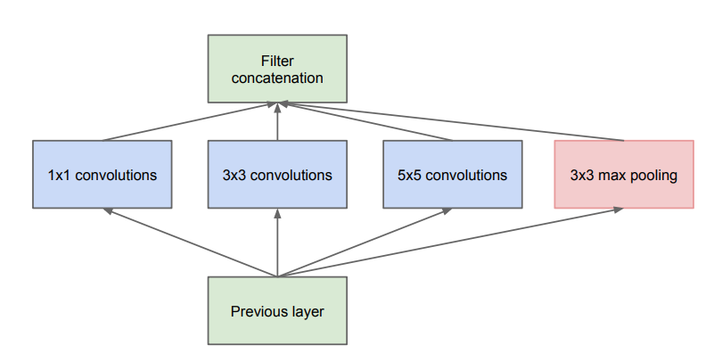
画像引用：[Going Deeper with Convolutions] https://arxiv.org/abs/1409.4842 より
インセプション構造は並列に複数の畳み込みレイヤー、プーリングレイヤーを用意することで学習を行い、その結果を連結（concatenate）します。
それではKerasに用意されているInceptionV3を使って画像認識に取り組んでみましょう。まずは次のようにInceptionV3の詳細を確認してみましょう。
from keras.applications.inception_v3 import InceptionV3
from keras.utils import plot_model
model = InceptionV3(weights='imagenet')
plot_model(model, to_file='inceptionv3_model.png',
show_shapes=True, show_layer_names=False)
上記のプログラムを実行するとカレントフォルダ上にinceptionv3_model.pngファイルが生成されます。画像ファイルを開くと深いネットワークで実装されているのがわかります。またネットワークの詳細を見ると、次のようにネットワーク上の処理が並列で定義（インセプション構造）されているのがわかります。
上記の図はモデルの一部分のみ表示しています。
ImageNet上のデータを使って学習済みのInceptionV3を使って、画像認識にチャレンジしてみましょう。
import numpy as np
from keras.applications.inception_v3 import InceptionV3, preprocess_input
from keras.applications.inception_v3 import decode_predictions
from keras.preprocessing.image import load_img, img_to_array
model = InceptionV3(weights='imagenet')
file = 'banana1.jpg'
image = img_to_array(load_img(file, target_size=(299, 299)))
images = np.array([image])
images = preprocess_input(images)
preds = model.predict(images)
print('Predicted:', decode_predictions(preds, top=3)[0])
InceptionV3はデフォルトの入力サイズは299x299となっています。
上記のプログラムを実行すると次のような結果が出力されるでしょう。
Predicted: [('n07753592', 'banana', 0.99998164),
('n07747607', 'orange', 7.2348112e-06),
('n07749582', 'lemon', 5.0941395e-07)]
100%に近い確率でbananaと予測しているのがわかります。
ResNetはMicrosoftの研究チームの発表したモデルです。2015年のILSVRCコンテストで優勝しています（誤認識率3.5%）。
[Deep Residual Learning for Image Recognition] https://arxiv.org/abs/1512.03385
ResNetはショートカット接続と呼ばれる仕組みを導入したことで、これまで以上に深い層のニューラルネットワークでも効率よく学習が行えるようになっています。

画像引用：[Deep Residual Learning for Image Recognition] https://arxiv.org/abs/1512.03385 より
それではKerasに用意されているResNet50を使って画像認識に取り組んでみましょう。まずは次のようにResNet50の詳細を確認してみましょう。
from keras.applications.resnet50 import ResNet50
from keras.utils import plot_model
model = ResNet50(weights='imagenet')
plot_model(model, to_file='resnet50_model.png',
show_shapes=True, show_layer_names=False)
上記のプログラムを実行するとカレントフォルダ上にresnet50_model.pngファイルが生成されます。画像ファイルを開くと深いネットワークで実装されているのがわかります。またネットワークの詳細を見ると、次のようにネットワーク上の処理がショートカット接続されているのがわかります。

上記の図はモデルの一部分のみ表示しています。
ImageNet上のデータを使って学習済みのInceptionV3を使って、画像認識にチャレンジしてみましょう。
import numpy as np
from keras.applications.resnet50 import ResNet50, preprocess_input
from keras.applications.resnet50 import decode_predictions
from keras.preprocessing.image import load_img, img_to_array
model = ResNet50(weights='imagenet')
file = 'banana1.jpg'
image = img_to_array(load_img(file, target_size=(224, 224)))
images = np.array([image])
images = preprocess_input(images)
preds = model.predict(images)
print('Predicted:', decode_predictions(preds, top=3)[0])
ResNet50はデフォルトの入力サイズは224x224となっています。
上記のプログラムを実行すると次のような結果が出力されるでしょう。
Predicted: [('n07753592', 'banana', 0.9823727),
('n07749582', 'lemon', 0.0063561294),
('n07720875', 'bell_pepper', 0.002998268)]
98%を超える確率でbananaと予測しているのがわかります。
前章ではInceptionV3やResNetといった学習済みモデルの利用方法を学びました。KerasのAPIを使って独自にインセプション構造や、ショートカット接続といった仕組みをKeras上で実装するにはどうすれば良いのでしょうか。ここではインセプション構造やショートカット接続といった仕組みを実装する方法を取り上げます。
Kerasには2つのモデルの作り方があります。1つはこれまでに見てきたようなSequentialクラスを使う方法です。
from keras.models import Sequential
from keras.layers import Dense
model = Sequential()
model.add(Dense(64, activation='relu', input_dim=(784)))
model.add(Dense(64, activation='relu'))
model.add(Dense(10, activation='softmax'))
model.compile(optimizer='sgd',
loss='categorical_crossentropy', metrics=['accuracy'])
Sequentialモデルは定義したレイヤーを順に処理していきます。AlexNetやVGG16のようなシンプルなニューラルネットワークであればSequentialモデルで実装可能です。
もう1つはModelクラスを使う方法です。この方法はFunctional APIとも呼ばれます。
from keras.layers import Input, Dense
from keras.models import Model
inputs = Input(shape=(784,))
x = Dense(64, activation='relu')(inputs)
x = Dense(64, activation='relu')(x)
predictions = Dense(10, activation='softmax')(x)
model = Model(inputs=inputs, outputs=predictions)
model.compile(optimizer='sgd',
loss='categorical_crossentropy', metrics=['accuracy'])
これまでに利用してきたDenseクラスやActivationクラスといったレイヤークラスはPythonのcallableオブジェクトとして実装されています。そのため上記のように関数呼び出しを連鎖するようなコーデイングスタイルで実装できます。
Kerasのレイヤークラス（InputクラスやDenseクラスやActivationなど）は呼び出し時の戻り値にテンソル（BackendがTensorFlowの場合はtf.Tensorオブジェクト）を返します。Modelクラスには入力となるテンソルと出力のテンソルは接続します。
Functional APIを使えばインセプション構造やショートカット接続など、複雑なモデルを実装することができます。また既存のモデルをベースに転移学習を行う場合にも利用します。
転移学習については後述します。
Pythonのcallableオブジェクトは次のようなcallメソッドを実装したクラスです。
class MyObject:
def __call__(self, *args, **kwargs):
print("called");
my_obj = MyObject()
my_obj()
print(callable(my_obj))
Pythonには組み込み関数callable()が用意されています。callable関数は引数がcallable（呼び出し可能）オブジェクトであればTrueを、そうでなければFalseを返します。
実行結果は次のようになります。
called
True
Functional APIを使ってインセプション構造を実装してみましょう。次のプログラムはMNISTデータをインセプション構造で処理します。
import keras
from keras.layers import Input, Dense, Conv2D, Activation
from keras.layers import MaxPooling2D, Flatten, Concatenate
from keras.models import Model
from keras.datasets import mnist
from keras.utils import to_categorical
(x_train, y_train), (x_test, y_test) = mnist.load_data()
x_train = x_train.astype('float32')
x_test = x_test.astype('float32')
x_train /= 255
x_test /= 255
x_train = x_train.reshape(60000, 28, 28, 1)
x_test = x_test.reshape(10000, 28, 28, 1)
y_train = to_categorical(y_train, 10)
y_test = to_categorical(y_test, 10)
inputs = Input(shape=(28, 28, 1))
x = Conv2D(32, kernel_size=(3, 3))(inputs)
x = Activation("relu")(x)
x = MaxPooling2D(pool_size=(2,2))(x)
tower_1 = Conv2D(64, (1, 1), padding='same', activation='relu')(x)
tower_1 = Conv2D(64, (3, 3), padding='same', activation='relu')(tower_1)
tower_2 = Conv2D(64, (1, 1), padding='same', activation='relu')(x)
tower_2 = Conv2D(64, (5, 5), padding='same', activation='relu')(tower_2)
tower_3 = MaxPooling2D((3, 3), strides=(1, 1), padding='same')(x)
tower_3 = Conv2D(64, (1, 1), padding='same', activation='relu')(tower_3)
x = Concatenate(axis=1)([tower_1, tower_2, tower_3])
x = Flatten()(x)
predictions = Dense(10, activation='softmax')(x)
model = Model(inputs=inputs, outputs=predictions)
model.compile(optimizer='rmsprop',
loss='categorical_crossentropy',
metrics=['accuracy'])
history = model.fit(x_train, y_train, validation_data=(x_test, y_test), epochs=10)
プログラムの実行結果は次のようになります。
Train on 60000 samples, validate on 10000 samples
...省略
Epoch 8/10
10s 160us/step - loss: 0.0483 - acc: 0.9861 - val_loss: 0.0558 - val_acc: 0.9834
Epoch 9/10
10s 160us/step - loss: 0.0473 - acc: 0.9869 - val_loss: 0.0538 - val_acc: 0.9835
Epoch 10/10
10s 160us/step - loss: 0.0461 - acc: 0.9876 - val_loss: 0.0539 - val_acc: 0.9839
Kerasのユーティリティを使ってモデルを可視化してみましょう。
from keras.utils import plot_model
plot_model(model, to_file='model_my_inception.png',
show_shapes=True, show_layer_names=False)
次のような結果が出力されるでしょう。
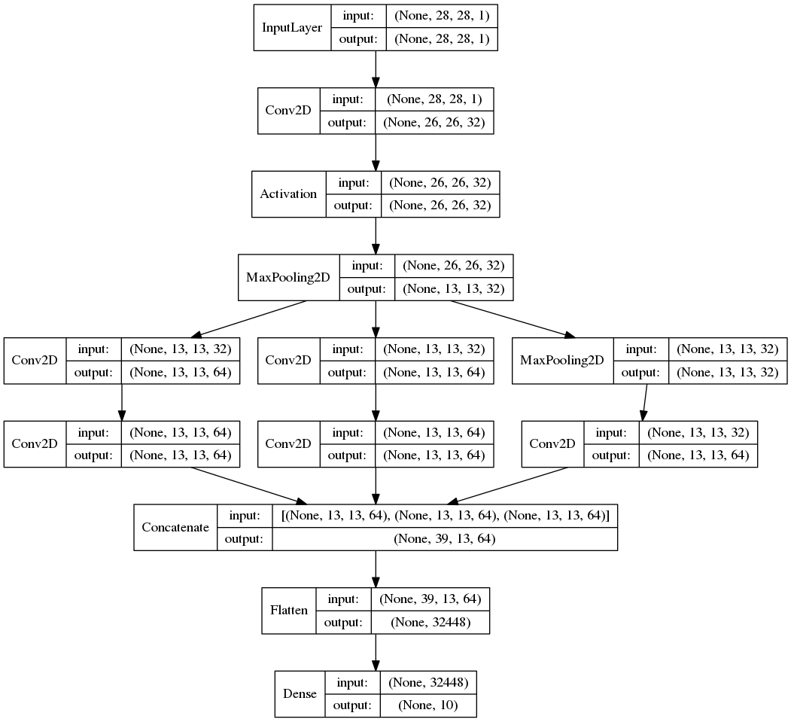
KerasのConcatenateレイヤーによって 、3つの入力[(None, 13, 13, 64), (None, 13, 13, 64), (None, 13, 13, 64)]が連結されて(None, 39, 13, 64)となっているのがわかります。
Functional APIを使ってショートカット接続を実装してみましょう。次のプログラムはMNISTデータをショートカット接続を使って処理します。
ショートカット接続はResNetで提案された手法です。ショートカット接続によって層の深いニューラルネットワークでも効率よく学習することができます。
import keras
from keras.layers import Input, Dense, Conv2D, Activation
from keras.layers import MaxPooling2D, Flatten, Add
from keras.models import Model
from keras.datasets import mnist
from keras.utils import to_categorical
(x_train, y_train), (x_test, y_test) = mnist.load_data()
x_train = x_train.astype('float32')
x_test = x_test.astype('float32')
x_train /= 255
x_test /= 255
x_train = x_train.reshape(60000, 28, 28, 1)
x_test = x_test.reshape(10000, 28, 28, 1)
y_train = to_categorical(y_train, 10)
y_test = to_categorical(y_test, 10)
inputs = Input(shape=(28, 28, 1))
x = Conv2D(32, kernel_size=(3, 3))(inputs)
x = Activation("relu")(x)
x = MaxPooling2D(pool_size=(2,2))(x)
y = Conv2D(32, kernel_size=(3, 3), padding='same')(x)
x = Add()([x, y])
x = Flatten()(x)
predictions = Dense(10, activation='softmax')(x)
model = Model(inputs=inputs, outputs=predictions)
model.compile(optimizer='rmsprop',
loss='categorical_crossentropy',
metrics=['accuracy'])
history = model.fit(x_train, y_train, validation_data=(x_test, y_test), epochs=10)
プログラムの実行結果はつぎのようになります。
Train on 60000 samples, validate on 10000 samples
...省略
Epoch 8/10
12s 201us/step - loss: 0.0315 - acc: 0.9903 - val_loss: 0.0501 - val_acc: 0.9853
Epoch 9/10
12s 200us/step - loss: 0.0290 - acc: 0.9917 - val_loss: 0.0544 - val_acc: 0.9851
Epoch 10/10
12s 201us/step - loss: 0.0264 - acc: 0.9920 - val_loss: 0.0573 - val_acc: 0.9846
Kerasのユーティリティを使ってモデルを可視化してみましょう。
from keras.utils import plot_model
plot_model(model, to_file='model_my_resnet.png',
show_shapes=True, show_layer_names=False)
次のような結果が出力されるでしょう。
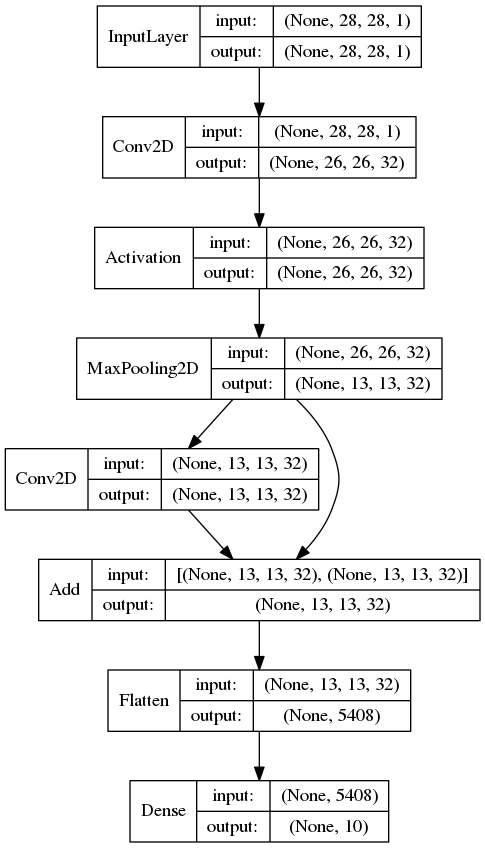
KerasのAddレイヤーによって2つの入力値[(None, 13, 13, 32), (None, 13, 13, 32)]が加算されます。加算のため出力シェイプは(None, 13, 13, 32)のままとなります。
学習済みのモデルの重みパラメータを別のニューラルネットワークにコピーして再学習することができます。たとえばImageNetのデータセットを学習したVGG16モデルの重みパラメータを活用して、あらたなニューラルネットワークとして再学習することができます。このような学習方法を転移学習と呼びます。転移学習によって既存の重みパラメータを再利用することで、少量のデータであっても効率よく学習することができます。
以降は学習済みのVGG16モデルを利用して、以下の2つの技法を学びます。
VGG16モデルはトップレイヤー（出力層側にある3つの全結合層）を切り離して利用することができます。

この場合、入力層から学習済みの畳み込み層のみを使うことになり、入力画像データに対して特徴ベクトルを出力する特徴抽出器として利用することができます。
from keras.applications.vgg16 import VGG16
from keras.preprocessing import image
from keras.applications.vgg16 import preprocess_input
import numpy as np
model = VGG16(weights='imagenet', include_top=False)
img_path = 'banana1.jpg'
img = image.load_img(img_path, target_size=(224, 224))
x = image.img_to_array(img)
x = np.expand_dims(x, axis=0)
x = preprocess_input(x)
features = model.predict(x)
print(x.shape)
print(features.shape)
プログラムを実行すると次のように出力されるでしょう。
(1, 224, 224, 3)
(1, 7, 7, 512)
ここでは訓練を行なわずにpredictメソッドを使用している点を確認しておきましょう。VGG16を推論用途に利用しています。
VGG16を特徴抽出器として利用すると、入力データは(224, 224, 3)だったのに対し、出力データは（7, 7, 512）に置き換わっているのがわかります。

224 * 224 * 3 = 150528次元のベクトルであった入力データが、特徴抽出器によって、7 * 7 * 512 = 25088次元のベクトルに変換されています。
抽出した特徴量を保存しておくことで、あらたなニューラルネットワークの入力データとしてことができます。
それではVGG16を特徴抽出器として利用してみましょう。
ここでは前提として以下のとおり学習用データが存在するものとします。
まずはVGG16を使って入力データの特徴を抽出します。
import numpy as np
from keras.preprocessing.image import ImageDataGenerator
from keras.applications.vgg16 import VGG16
model = VGG16(include_top=False, weights='imagenet')
train_datagen = ImageDataGenerator(rescale=1.0 / 255)
train_generator = train_datagen.flow_from_directory('data240x360/train',
target_size=(240, 360),
batch_size=32,
class_mode=None,
shuffle=False)
bottleneck_features_train = model.predict_generator(train_generator,
train_generator.samples / 32)
print(bottleneck_features_train.shape)
np.save(open('bottleneck_features_train.npy', 'wb'), bottleneck_features_train)
test_datagen = ImageDataGenerator(rescale=1. / 255)
test_generator = test_datagen.flow_from_directory('data240x360/test',
target_size=(240, 360),
batch_size=32,
class_mode=None,
shuffle=False)
bottleneck_features_test = model.predict_generator(test_generator,
test_generator.samples / 32)
print(bottleneck_features_test.shape)
np.save(open('bottleneck_features_test.npy', 'wb'), bottleneck_features_test)
プログラムの実行結果は次のようになるでしょう。
Found 864 images belonging to 2 classes.
(864, 7, 11, 512)
Found 700 images belonging to 2 classes.
(700, 7, 11, 512)
ここでは訓練を行なわずに特徴を抽出しています。

またカレントフォルダに以下の2つのファイルが生成されているのがわかります。
プログラムの詳細を見てみましょう。
まずはVGG16インスタンスの生成時にinclude_topオプションにFalseを指定しています。
model = VGG16(include_top=False, weights='imagenet')
これにより、VGG16上のトップレイヤー（出力層側にある3つの全結合層）を切り離して、特徴抽出器として利用できるようになります。
次にImageDataGeneratorを使って、フォルダ上の訓練データを扱うジェネレータを作成しています。
train_datagen = ImageDataGenerator(rescale=1. / 255)
train_generator = train_datagen.flow_from_directory('data240x360/train',
target_size=(240, 360),
batch_size=32,
class_mode=None,
shuffle=False)
bottleneck_features_train = model.predict_generator(train_generator,
train_generator.samples / 32)
このときflow_from_directoryメソッドのclass_modeにはNoneを指定しています。直後の処理でfitメソッドではなく、predict_generatorメソッドを利用するのでラベルデータ（解答）は不要となるのでNoneを指定します。また引数のshuffleオプションにFlaseを指定することでデータをシャッフルしないようにしています。
次に抽出した特徴を入力データとして、次のようなニューラルネットワークを学習してみましょう。

プログラムは次のようになります。
import numpy as np
from keras.models import Model
from keras.layers import Input, Dropout, Flatten, Dense
x_train = np.load(open('bottleneck_features_train.npy', "rb"))
y_train = np.array([0] *( x_train.shape[0] // 2) + [1] * (x_train.shape[0] // 2))
x_test = np.load(open('bottleneck_features_test.npy', "rb"))
y_test = np.array([0] * (x_test.shape[0] // 2) + [1] * (x_test.shape[0] // 2))
inputs = Input(shape=x_train.shape[1:])
x = Flatten()(inputs)
x = Dense(256, activation='relu')(x)
x = Dropout(0.5)(x)
outputs = Dense(1, activation='sigmoid')(x)
model = Model(inputs=inputs, outputs=outputs)
model.compile(optimizer='adadelta', loss='binary_crossentropy',
metrics=['accuracy'])
history = model.fit(x_train, y_train, epochs=10, batch_size=32,
validation_data=(x_test, y_test))
プログラムの実行結果は次のようになるでしょう。
Train on 864 samples, validate on 700 samples
Epoch 1/10
1s 1ms/step - loss: 0.9053 - acc: 0.6528 - val_loss: 0.3980 - val_acc: 0.8314
Epoch 2/10
1s 743us/step - loss: 0.4255 - acc: 0.8229 - val_loss: 0.3329 - val_acc: 0.8643
Epoch 3/10
1s 737us/step - loss: 0.2854 - acc: 0.8831 - val_loss: 0.3012 - val_acc: 0.8757
Epoch 4/10
1s 739us/step - loss: 0.2431 - acc: 0.8993 - val_loss: 0.2605 - val_acc: 0.9043
Epoch 5/10
1s 739us/step - loss: 0.1836 - acc: 0.9213 - val_loss: 0.3758 - val_acc: 0.8129
Epoch 6/10
1s 735us/step - loss: 0.1635 - acc: 0.9514 - val_loss: 0.3725 - val_acc: 0.8314
Epoch 7/10
1s 741us/step - loss: 0.1277 - acc: 0.9549 - val_loss: 0.2329 - val_acc: 0.9043
Epoch 8/10
1s 741us/step - loss: 0.1396 - acc: 0.9491 - val_loss: 0.2266 - val_acc: 0.9043
Epoch 9/10
1s 742us/step - loss: 0.0963 - acc: 0.9699 - val_loss: 0.2785 - val_acc: 0.8871
Epoch 10/10
1s 745us/step - loss: 0.0910 - acc: 0.9676 - val_loss: 0.2416 - val_acc: 0.9086
抽出した特徴から上手く学習できているのがわかります。
特徴抽出器をデータの前処理として利用しているので、学習時間も短時間で済みます。
プログラムの詳細を見てみましょう。
まずはnumpyを使って事前に抽出した特徴をロードしています。
x_train = np.load(open('bottleneck_features_train.npy', "rb"))
y_train = np.array([0] *( x_train.shape[0] // 2) + [1] * (x_train.shape[0] // 2))
ラベルデータ（y_train）については、訓練データの先頭半分（350件）を[0]、後ろ半分（350件）を[1]とラベルを設定しています。特徴抽出時にシャッフルせずにデータをロードしたため、このような簡易な実装としています。
その後はFunctional APIを使って新たな学習モデルを構築しています。
inputs = Input(shape=x_train.shape[1:])
x = Flatten()(inputs)
x = Dense(256, activation='relu')(x)
x = Dropout(0.5)(x)
outputs = Dense(1, activation='sigmoid')(x)
model = Model(inputs=inputs, outputs=outputs)
入力層は特徴データのシェイプに合わせて定義してます。
学習済みのVGG16を再利用する方法を引き続き見ていきましょう。前章の特徴抽出器は、学習済みのVGG16のトップレイヤー（出力層側にある3つの全結合層）を除いた畳み込み層を再利用するものでした。
これはVGG16の畳み込み層の学習済みのパラメータを再利用して、入力した画像ファイルの特徴を抽出するものでした。そのためVGG16モデルそのものを訓練することは行いませんでした。
次に学習するファインチューニングは、既存のモデルの持つレイヤーの一部を再学習させる方法です。既存の学習済みパラメータを再利用しつつ、独自のデータセットに合わせて、既存のレイヤーの持つ重みパラメータを調整していくことができます。
それではVGG16を畳み込み層の一部を再学習させてみましょう。ここでは次のように出力層側の畳み込み層を再学習させるものとします。また既存のトップレイヤーは使わず、用途に合わせてトップレイヤーを再実装しています。
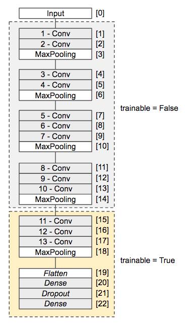
次のようにプログラムを作成します。
from keras.models import Model
from keras.layers import Flatten, Dense, Dropout
from keras.preprocessing.image import ImageDataGenerator
from keras.applications.vgg16 import VGG16
from keras.layers import Input
from keras.optimizers import SGD
from keras.datasets import cifar10
from keras.utils import to_categorical
base_model = VGG16(weights='imagenet',
include_top=False,
input_tensor=Input(shape=(240, 360, 3)))
for layer in base_model.layers[:15]:
layer.trainable = False
x = base_model.output
x = Flatten()(x)
x = Dense(256, activation='relu')(x)
x = Dropout(0.5)(x)
outputs = Dense(1, activation='sigmoid')(x)
model = Model(inputs=base_model.input, outputs=outputs)
model.compile(optimizer='sgd', loss='binary_crossentropy', metrics=['acc'])
train_datagen = ImageDataGenerator(rescale=1.0/255,
width_shift_range=0.3,
rotation_range=30,
zoom_range=0.3,
horizontal_flip=True,
vertical_flip=True)
train_generator = train_datagen.flow_from_directory('data240x360/train',
target_size=(240, 360),
batch_size=32,
class_mode='binary')
test_datagen = ImageDataGenerator(rescale=1.0/255)
test_generator = test_datagen.flow_from_directory('data240x360/test',
target_size=(240, 360),
batch_size=32,
class_mode='binary')
history = model.fit_generator(train_generator,
validation_data=test_generator,
steps_per_epoch=train_generator.samples / 32,
validation_steps=test_generator.samples / 32,
epochs=10)
プログラムを実行すると次のように出力されるでしょう。
Found 864 images belonging to 2 classes.
Found 700 images belonging to 2 classes.
Epoch 1/10
45s 2s/step - loss: 0.9696 - acc: 0.5255 - val_loss: 0.6775 - val_acc: 0.6171
Epoch 2/10
44s 2s/step - loss: 0.6770 - acc: 0.5845 - val_loss: 0.6532 - val_acc: 0.6314
Epoch 3/10
44s 2s/step - loss: 0.6331 - acc: 0.6435 - val_loss: 0.5285 - val_acc: 0.7457
Epoch 4/10
45s 2s/step - loss: 0.5251 - acc: 0.7500 - val_loss: 0.3389 - val_acc: 0.8743
Epoch 5/10
45s 2s/step - loss: 0.5065 - acc: 0.7708 - val_loss: 0.3120 - val_acc: 0.8957
Epoch 6/10
45s 2s/step - loss: 0.3910 - acc: 0.8287 - val_loss: 0.2503 - val_acc: 0.9214
Epoch 7/10
45s 2s/step - loss: 0.3822 - acc: 0.8507 - val_loss: 0.2285 - val_acc: 0.9086
Epoch 8/10
45s 2s/step - loss: 0.3461 - acc: 0.8507 - val_loss: 0.2082 - val_acc: 0.9286
Epoch 9/10
45s 2s/step - loss: 0.3019 - acc: 0.8692 - val_loss: 0.2009 - val_acc: 0.9229
Epoch 10/10
45s 2s/step - loss: 0.2948 - acc: 0.8924 - val_loss: 0.2194 - val_acc: 0.9286
これまでに比べて最も高い93%近い正答率となっています。
ここでは240x360サイズをサンプルにしていますが、以前に利用した60x90サイズの画像で検証した場合も90%程度の結果を確認できるでしょう。
プログラムの詳細を見てみましょう。
まずはVGG16モデルを生成しています。
base_model = VGG16(weights='imagenet',
include_top=False,
input_tensor=Input(shape=(240, 360, 3)))
このときweights='imagenet'を指定することでImageNetで学習済みのパラメータをロードし、include_top=Falseを指定することでトップレイヤー（出力層側にある3つの全結合層）を読み込まないようにしています。またinput_tensor=Input(shape=(240, 360, 3)を指定することで入力層で受け取る画像のシェイプを240x360（3チャネル）としています。
次に生成した既存のVGG16モデルのレイヤー（0-14レイヤーまで）に対して、重みパラメータを学習しないように設定しています。
for layer in base_model.layers[:15]:
layer.trainable = False
上記のようにレイヤーオブジェクトのtrainableプロパティにFalseを代入することで、重みパラメータの学習を無効にすることができます。これにより15層目の畳み込みレイヤーのみ重みパラメータを学習することができます。
以降は2値分類を行うためのトップレイヤーを実装しています。
x = base_model.output
x = Flatten()(x)
x = Dense(256, activation='relu')(x)
x = Dropout(0.5)(x)
outputs = Dense(1, activation='sigmoid')(x)
最後にVGG16モデルにトップレイヤーを結合します。
model = Model(inputs=base_model.input, outputs=outputs)
model.compile(optimizer='sgd', loss='binary_crossentropy', metrics=['acc'])
VGG16の既存の畳み込みレイヤーの学習を停止すれば、前章のようにVGG16を特徴抽出器として利用できます。
for layer in base_model.layers:
layer.trainable = False

この場合、既存の畳み込み層を活用した特徴の抽出と再実装したトップレイヤーの訓練を合わせて行うことになります。